第18章 细胞组织与运动 II：微管和中间丝
译自 Molecular Cell Biology, 第8版 · Lodish et al. · Cell Organization and Movement II: Microtubules and Intermediate Filaments · 保留全部图表（点击图片可放大）
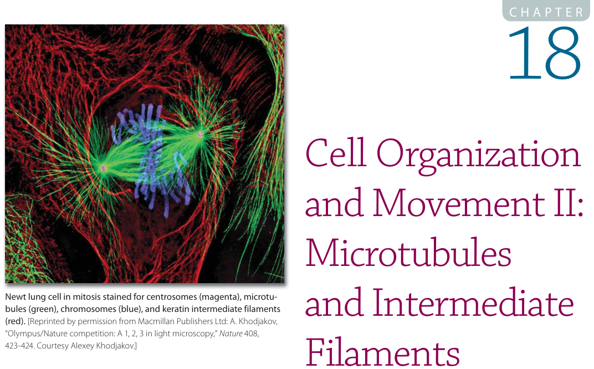
正如我们在上一章所学到的，动物细胞的细胞骨架由三种类型的丝构成：微丝、微管和中间丝。为什么会进化出这三种不同的丝？很可能是因为它们的物理性质适合不同的功能。在第17章中，我们描述了肌动蛋白微丝如何常常交联成网络或束，以形成柔韧而动态的结构，并充当许多不同类别肌球蛋白马达的轨道。类似地，微管是刚性的管状结构，既可以以单一结构存在，在细胞中延伸长达20 μm，也可以成束排列，例如在纤毛和鞭毛这类特化的细胞表面结构中所见到的那样。由于其管状设计，微管能够在发生屈曲的情况下产生推力和拉力，这一性质使得单根微管能在细胞内长距离延伸，也使得成束的微管能彼此滑过，正如在鞭毛和有丝分裂纺锤体中发生的那样。微管在细胞内长距离延伸的能力，加上其固有的极性，被依赖微管的马达所利用，这些马达把微管当作细胞器长距离运输的轨道。微管可以高度动态——从其末端快速地组装和解聚——从而为细胞提供按需改变微管组织的灵活性。
与微丝和微管不同，中间丝具有很高的抗张强度，其进化是为了承受大得多的应力和应变。它们的性质类似于结实的分子绳索，非常适合赋予细胞和组织结构完整性，并有助于细胞的组织构建。中间丝不像微丝和微管那样具有固有极性，因此没有已知的马达蛋白以中间丝为轨道也就不足为奇了。尽管我们在本章中把微管和中间丝放在一起讨论——尽管它们在胞质溶胶中的定位表面上看起来颇为相似——我们将会看到，它们的动态变化和功能非常不同。这三种丝系统之间相似性与差异的总结见图18-1。
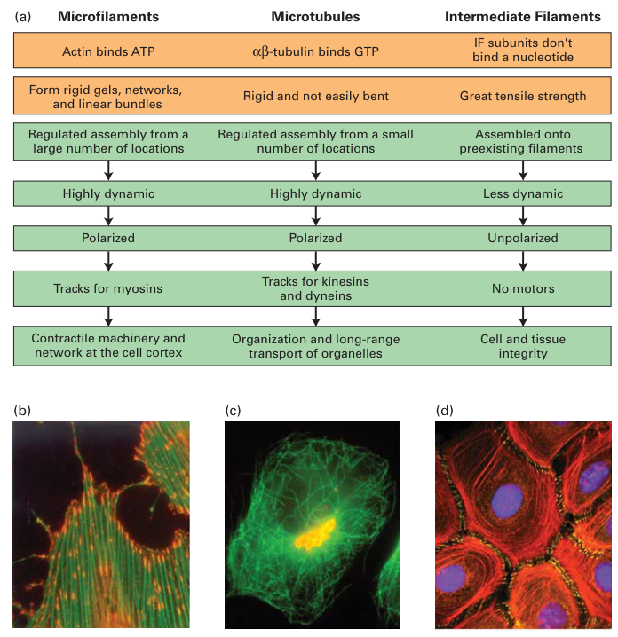
| Microfilaments | 微丝 |
| Microtubules | 微管 |
| Intermediate Filaments | 中间丝 |
| Actin binds ATP | 肌动蛋白结合ATP |
| αβ-tubulin binds GTP | αβ-微管蛋白结合GTP |
| IF subunits don't bind a nucleotide | 中间丝亚基不结合核苷酸 |
| Rigid and not easily bent | 刚性且不易弯曲 |
| Great tensile strength | 抗张强度大 |
| Highly dynamic | 高度动态 |
| Less dynamic | 动态性较低 |
| Polarized | 有极性 |
| Unpolarized | 无极性 |
| Tracks for myosins | 肌球蛋白的轨道 |
| Tracks for kinesins and dyneins | 驱动蛋白和动力蛋白的轨道 |
| No motors | 无马达蛋白 |
本章涵盖五个主要主题。第一，我们讨论微管及其马达蛋白的结构与动态变化。第二，我们考察微管及其马达如何促成纤毛和鞭毛的运动。第三，我们讨论微管在有丝分裂纺锤体中的作用——这是一个进化出来精确分离已复制染色体的分子机器。第四，我们探讨不同类别中间丝的作用，它们为核膜提供结构，并为细胞和组织提供强度与有序组织。尽管我们逐一讨论微管、微丝和中间丝，但这三种丝系统并非彼此独立地发挥作用，我们将在本章最后一节考察这种相互依赖的一些例子。
18.1 微管的结构与组织
在电子显微镜应用的早期，细胞生物学家注意到细胞质中有长长的管状结构，将其称为微管。形态上相似的微管被发现构成有丝分裂纺锤体的纤维、作为轴突的组分，以及作为纤毛和鞭毛中的结构元件（图18-2a, b）。对来自不同来源的单根微管作横切面仔细观察表明，它们都由13条纵向重复单位构成（图18-2c），现在称为原丝，提示这些不同的微管都具有共同的结构。随后发现，从脑中纯化的微管由一种主要蛋白——微管蛋白——以及一些相关蛋白即微管相关蛋白（MAP）组成。仅纯化的微管蛋白在适宜条件下就能组装成微管，证明微管蛋白是微管壁的结构组分。我们将会看到，MAP有助于介导微管的组装、动态变化和功能。在本节中，我们先讨论微管的一般结构与组织，然后再在第18.2节和第18.3节更详细地讨论其动态变化与调控。
微管壁是由αβ-微管蛋白二聚体构建的极性结构
以纯净可溶形式分离的微管蛋白由两个密切相关的亚基组成，称为α-微管蛋白和β-微管蛋白，每个亚基的分子量约为55,000 Da。基因组分析显示，编码α-微管蛋白和β-微管蛋白的基因存在于所有真核生物中，并且在多细胞生物中基因数目已大幅扩增。例如，芽殖酵母有两个基因编码α-微管蛋白，而只有一个基因编码β-微管蛋白，而土壤线虫秀丽隐杆线虫（Caenorhabditis elegans）有九个基因编码α-微管蛋白、六个基因编码β-微管蛋白。除α-微管蛋白和β-微管蛋白外，所有真核生物还有编码第三种微管蛋白即γ-微管蛋白的基因，γ-微管蛋白参与微管的组装，我们稍后会看到。人们还发现了仅在具有中心粒和基体这两种细胞结构的生物中存在的其他微管蛋白同工型，提示这些微管蛋白同工型对这些结构很重要。正如我们将在本章了解到的，中心粒和基体是一些生物用来为微管的组装提供成核位点并加以组织的特化结构。
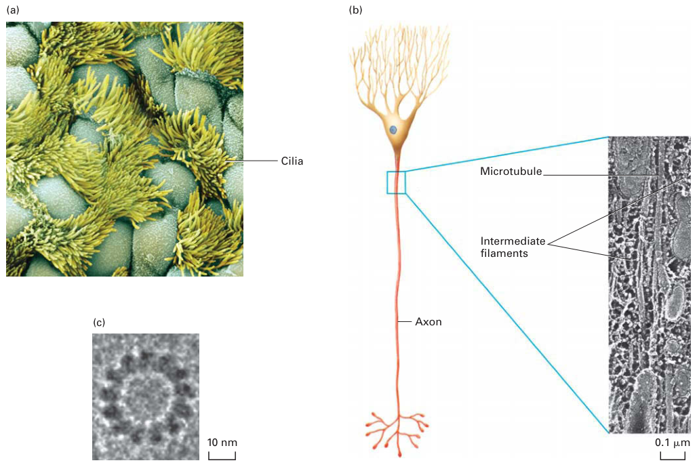
| Cilia | 纤毛 |
| Microtubule | 微管 |
| Intermediate filaments | 中间丝 |
| Axon | 轴突 |
微管蛋白二聚体的α-亚基和β-亚基各自都能结合一个GTP分子（图18-3a）。α-微管蛋白亚基中的GTP从不被水解，它被α-亚基与β-亚基之间的界面所捕获。相比之下，β-亚基上的GTP结合位点位于二聚体的表面。β-亚基结合的GTP可以被水解，生成的GDP可以与游离的GTP交换。在适宜的条件下，可溶性微管蛋白二聚体可以组装成微管（图18-3b）。正如我们在第17章中看到的肌动蛋白聚合那样，ATP–G-肌动蛋白优先加到丝的一端，该端称为正端（+），因为它是利于组装的一端。一旦掺入丝中，结合的ATP就被水解为ADP和Pi。类似地，β-亚基结合了GTP的微管蛋白二聚体优先加到微管的一端，该端也称为正端（+）。我们将会看到，微管蛋白一旦掺入微管中，GTP就被水解，但与肌动蛋白丝中的ATP水解不同，这种GTP水解对微管(+)端的行为有显著影响。
一根微管由13条横向相连的原丝构成，它们形成外径约25 nm的管（见图18-3b）。13条原丝中的每一条都是一串αβ-微管蛋白二聚体，纵向排列，使得各亚基沿原丝交替出现，每种亚基每8 nm重复一次。因为原丝中的αβ-微管蛋白二聚体全都以相同方式取向，所以每条原丝一端为α-亚基、另一端为β-亚基——因此原丝具有固有极性。在一根微管中，所有横向相连的原丝都具有相同的极性，因此微管也具有总体极性。暴露β-亚基的一端是(+)端，而暴露α-亚基的一端是负端（−）。在微管中，相邻原丝中的异二聚体略有交错，在微管壁上形成倾斜的α-微管蛋白和β-微管蛋白单体行。例如，如果你沿着一行β-亚基绕微管螺旋一整圈，你会恰好到达沿原丝向上三个亚基处，紧挨着一个α-亚基。因此所有微管都有一个纵向的接缝，即一条原丝中的α-亚基与相邻原丝中的β-亚基相接之处。
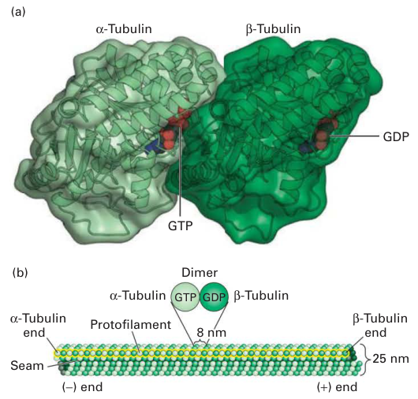
| GDP | GDP |
| GTP | GTP |
| α-Tubulin | α-微管蛋白 |
| β-Tubulin | β-微管蛋白 |
| Dimer | 二聚体 |
| Protofilament | 原丝 |
| Seam | 接缝 |
| (+) end | 正端（+） |
| (−) end | 负端（−） |
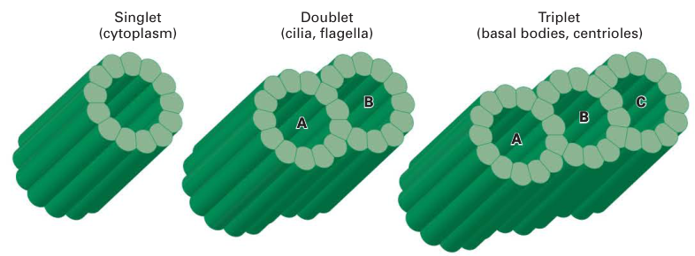
| Singlet | 单管 |
| Doublet | 二联体 |
| Triplet | 三联体 |
| Cytoplasm | 胞质 |
| Cilia | 纤毛 |
| Flagella | 鞭毛 |
| Basal bodies | 基体 |
| Centrioles | 中心粒 |
细胞中的大多数微管是简单的管，即单管微管，由13条原丝构建而成。在少数情况下，单管微管所含的原丝多于或少于13条；例如，线虫神经元中的某些微管含11条或15条原丝。除了这种简单的单管结构外，在纤毛和鞭毛（二联体微管）以及中心粒和基体（三联体微管）等特化结构中也存在二联体或三联体微管，这些结构我们将在本章后面探讨。每个二联体或三联体含一条完整的13原丝微管（称为A管）和一到两条额外的管（B和C），每条由10条原丝构成（图18-4）。
微管从MTOC组装，形成多样的构型
一旦确定了微管蛋白是微管的主要结构组分，就可以制备抗微管蛋白抗体，并将其用于免疫荧光显微镜以定位细胞中的微管（图18-5a, b）。这种方法与电子显微镜相结合，表明微管是从细胞中的特定部位组装而成的，从而形成许多不同的构型。
微管组装的成核阶段在能量上如此不利，以至于自发成核在体内微管组装中并不起重要作用。相反，所有微管都是从称为微管组织中心（MTOC）的结构成核的。在大多数情况下，微管的(−)端锚定在MTOC中，而(+)端向外延伸。
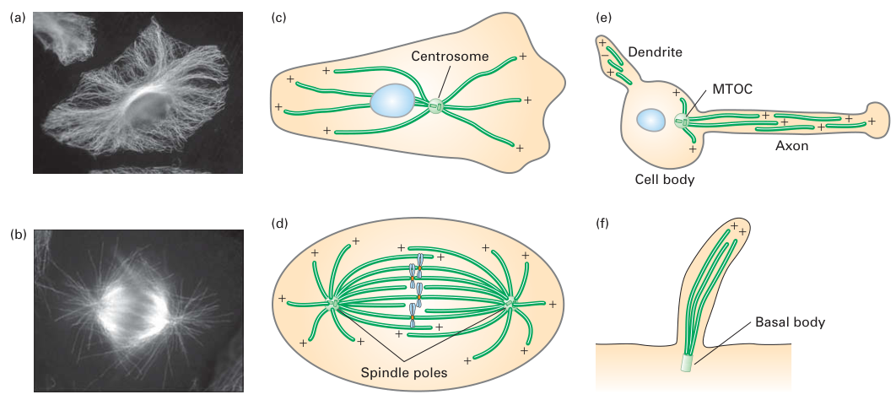
| Centrosome | 中心体 |
| Spindle poles | 纺锤体极 |
| Dendrite | 树突 |
| MTOC | 微管组织中心（MTOC） |
| Cell body | 胞体 |
| Axon | 轴突 |
| Basal body | 基体 |
MTOC有几种类型。中心体是动物细胞中的主要MTOC。在间期，中心体一般位于细胞核附近，产生一个微管阵列，其(+)端向细胞周边辐射（图18-5c）。这种放射状阵列为基于微管的马达蛋白提供轨道，以组织和运输膜包围的区室，例如构成分泌途径和胞吞途径的那些区室。在有丝分裂期间，细胞完全重组其微管，形成从两个中心体（也称为纺锤体极）延伸的双极纺锤体，从而能精确分离已复制染色体的拷贝（图18-5d）。另一个例子是，神经元具有称为轴突的长突起，细胞器在其中沿微管双向运输（图18-5e）。轴突中的微管可长达1 m，它们并不连续，而且已从MTOC释放，但所有微管都具有相同的极性。称为树突的较短突起中的微管极性混合，不过这种差异的功能意义尚不清楚。在纤毛和鞭毛中（图18-5f），微管从一个称为基体的MTOC组装。正如我们后面提到的，植物没有中心体和基体，而是使用其他机制使微管的组装成核。
电子显微镜显示，动物细胞中的每个中心体由一对呈正交排列的圆柱形中心粒组成，周围环绕着看似无定形的物质，称为中心粒周围物质（图18-6a）。中心粒长约0.5 μm、直径约0.2 μm，是高度有序而稳定的结构，由九组三联体微管构成（图18-6b）。它们在结构上与纤毛和鞭毛基部的基体密切相关。使细胞质微管阵列成核的并不是中心粒本身，而是中心粒周围物质中的一些因子。一个关键组分是γ-微管蛋白环状复合物（γ-TuRC）（图18-6c和图18-7），它位于中心粒周围物质中，由许多拷贝的γ-微管蛋白与若干其他蛋白结合而成。据认为，γ-TuRC像一个开口垫圈模板那样结合αβ-微管蛋白二聚体，以形成一根新的微管，该微管的(−)端与γ-TuRC结合，而(+)端游离以便进一步组装。除了使微管组装成核外，中心体还锚定并调控位于其处的微管(−)端的动态变化。
基体的结构类似于中心粒，是位于纤毛和鞭毛基部的MTOC。其三联体微管的A管和B管为构成纤毛和鞭毛核心结构的微管的组装提供模板。
最近的研究发现了动物细胞中微管成核的另一种机制，它也涉及γ-TuRC。一个称为augmin复合物的蛋白复合物由八条多肽组成，能结合到已有微管的侧面，然后招募γ-TuRC并使新微管组装成核。正如我们将在后面一节讨论的，augmin复合物参与有丝分裂纺锤体中的微管组装。
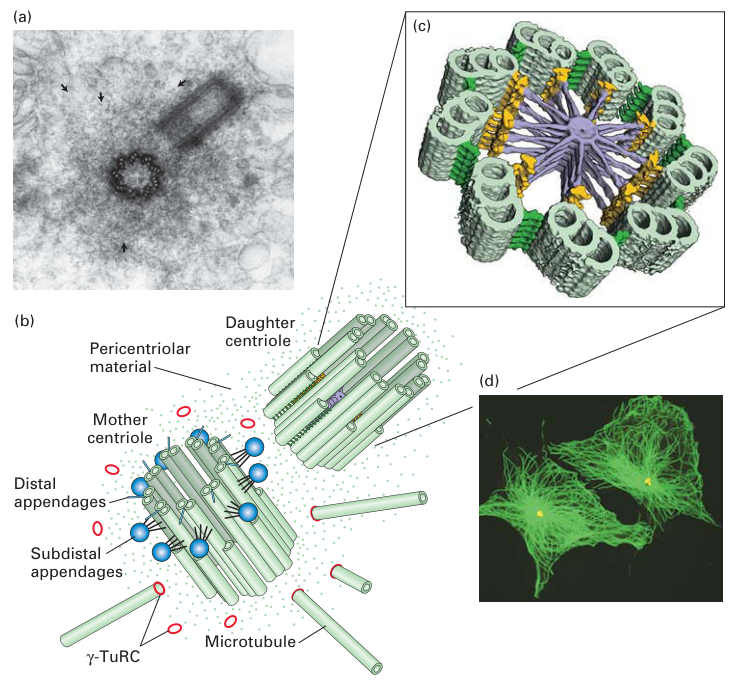
| Mother centriole | 母中心粒 |
| Daughter centriole | 子中心粒 |
| Pericentriolar material | 中心粒周围物质 |
| γ-TuRC | γ-微管蛋白环状复合物（γ-TuRC） |
| Microtubule | 微管 |
| Distal appendages | 远端附属物 |
| Subdistal appendages | 亚远端附属物 |
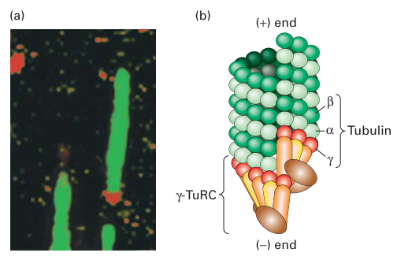
| α-Tubulin | α-微管蛋白 |
| β-Tubulin | β-微管蛋白 |
| γ-Tubulin | γ-微管蛋白 |
| γ-TuRC | γ-微管蛋白环状复合物（γ-TuRC） |
| (+) end | 正端（+） |
| (−) end | 负端（−） |
- 微管蛋白是微管的主要结构组分（见图18-3）。微管相关蛋白（MAP）与微管蛋白结合，并有助于介导微管的组装、动态变化和功能。
- 游离的微管蛋白以二聚体形式存在，其中α-亚基含有一个被捕获的、不可水解的GTP，而β-亚基结合一个可交换、可水解的GTP。
- αβ-微管蛋白组装成微管，每根微管由13条横向相连的原丝构成，每条原丝的(−)端暴露α-亚基，而(+)端暴露β-亚基。
- 在纤毛和鞭毛以及中心粒和基体中，存在二联体或三联体微管，其中额外的微管各有10条原丝（见图18-4）。
- 所有微管都是从微管组织中心（MTOC）成核的，许多微管的(−)端仍锚定在那里。因此远离MTOC的一端总是(+)端。
- 中心体是使间期动物细胞中放射状微管阵列成核的MTOC。两个中心体即纺锤体极，是使动物细胞有丝分裂纺锤体的微管成核的MTOC。基体是组装纤毛和鞭毛微管的MTOC（见图18-5）。
- 中心体由两个中心粒和周围的中心粒周围物质组成，后者含γ-TuRC微管成核复合物（见图18-6和图18-7）。
18.2 微管的动态变化
微管是动态结构，能迅速在其末端组装或解聚。它们的寿命差异极大：有丝分裂期细胞中的微管平均不到1分钟，而构成间期动物细胞中放射状阵列的微管约为5–10分钟。轴突中微管的寿命更长，纤毛与鞭毛中的则长得多。为了了解这些差异是如何产生的，我们来讨论微管的动态特性，以及这些特性如何参与决定其在细胞内的组织方式。
单根微管表现出动态不稳定性
早期实验显示，动物细胞中的大多数微管在细胞冷却到4 °C时会解聚，而当细胞回暖到37 °C时又会重新组装。研究者意识到，可以利用微管这一内在特性来纯化其组分。由于脑组织富含微管，人们在4 °C下制备了猪脑的可溶性提取物；随后将这些澄清的提取物升温到37 °C以诱导微管组装。组装好的微管经离心收集为沉淀，与上清液分离，然后通过加入4 °C的缓冲液使其解聚。经过又一轮升温组装、收集和冷却解聚之后，研究者回收到了微管蛋白质——这是对αβ-微管蛋白和微管相关蛋白（MAP）的统称。他们随后得以将微管蛋白质分级分离为纯的αβ-微管蛋白和MAP，以便分别研究它们各自的行为。研究者发现，二聚体αβ-微管蛋白聚合成微管的过程在MAP存在时被大大催化。
尽管人们投入了大量研究来表征溶液中微管蛋白质的总体聚合特性，但其普遍意义已被后来考察单根微管特性的研究所取代。不过，从这些早期体外研究中得到的一些经验对微管生物学仍然重要。第一，要发生组装，αβ-微管蛋白的浓度必须高于临界浓度（Cc），正如我们在肌动蛋白聚合中看到的那样（见图17-8）。第二，当αβ-微管蛋白浓度高于Cc时，二聚体加到微管一端的速度快于加到另一端（图18-8）。与F-肌动蛋白组装一样，组装的偏好端，即暴露出β-微管蛋白的那一端，被称为(+)端。(−)端则暴露出α-微管蛋白（见图18-3b）。
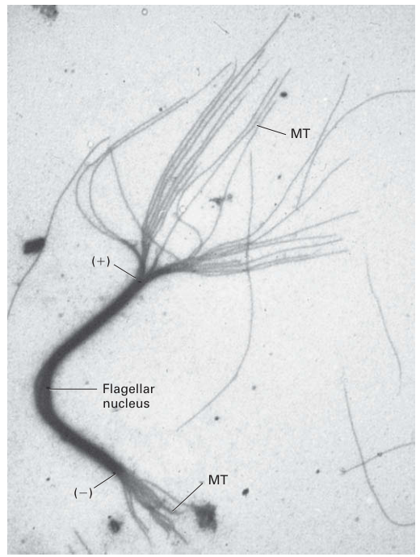
| MT | 微管（MT） |
| Flagellar | 鞭毛的 |
| nucleus | 核心 |
在研究微管组装的总体特性时，人们可能会设想所有微管的行为都相似。然而，当研究者考察一个群体中单根微管的行为时，发现情况并非如此。单根微管的行为通过一个非常简单的实验来考察：在体外组装微管，然后将其剪切成长度较短的小段，各段的长度可用显微镜分析。在这种条件下，人们或许会预期所有短微管要么生长、要么缩短，取决于游离微管蛋白的浓度。然而研究者发现，有些微管长度增加，另一些则迅速变短——这表明存在两个不同的微管群体。进一步的研究显示，单根微管可以生长，然后突然发生灾变：骤然转变为缩短相，在此期间微管会迅速解聚。此外，有时正在解聚的微管末端会经历一次救援并重新开始生长（图18-9）。尽管这一现象最初是在体外观察到的，但对显微注射入活细胞的荧光标记微管蛋白的分析表明，细胞内的微管也会经历生长期和缩短期（图18-10）。这种在生长态与缩短态之间的交替被称为动态不稳定性。因此，微管末端的动态历程由生长速率、灾变频率、解聚速率和救援频率共同决定。我们后面会看到，微管动态的这些特征在体内受到调控。由于动物细胞中微管的(−)端通常锚定在MTOC上，这种动态性主要与微管的(+)端有关。
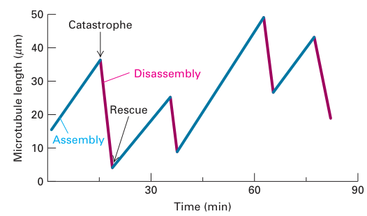
| Microtubule length (μm) | 微管长度（μm） |
| Time (min) | 时间（min） |
| Assembly | 组装 |
| Rescue | 救援 |
| Disassembly | 解聚 |
| Catastrophe | 灾变 |
动态不稳定性的分子基础是什么？如果你在电子显微镜下仔细观察生长中与缩短中的微管末端，就会发现它们大不相同。生长中的微管具有相对平钝的末端，而正在解聚的末端则有原丝像公羊角一样向外剥离（图18-11）。事实上，生长中微管的末端并不只是一个平钝的末端，而是一个短而轻微弯曲的片层状结构，它由微管蛋白二聚体加到原丝末端而形成，随后沿接缝卷起，形成原丝平直的圆柱形微管。
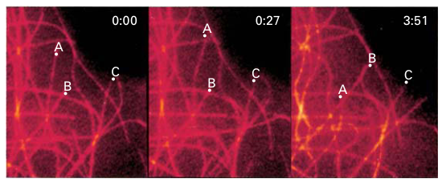
一个简单的结构差异解释了这两类微管(+)端的形态。正如我们上面所指出的，αβ-微管蛋白二聚体的β亚基暴露在每条原丝的(+)端。研究者利用一种GDP类似物发现，由含GDP-β-微管蛋白的重复αβ-微管蛋白二聚体构成的人工单根原丝——它们不参与侧向相互作用——是弯曲的，像公羊角一样。然而，由β-微管蛋白结合了GTP类似物的αβ-微管蛋白二聚体构成的人工单根原丝只轻微弯曲。微管的组装端含有这些轻微弯曲的新生原丝，从而形成生长端特有的轻微弯曲片层和单根原丝（见图18-11）。含GTP-β-微管蛋白的轻微弯曲原丝随后通过侧向相互作用像拉链一样合拢，在微管内形成平直的原丝。相比之下，末端卷曲的缩短中微管以GDP-β-微管蛋白收尾。因此，如果在一条已停止生长的微管上，末端β-微管蛋白中的GTP分子被水解，原本末端平钝的微管就会卷曲，随即发生灾变。这些关系总结于图18-11。
这些结果还有一个引人入胜的推论，但要理解它，我们必须更仔细地考察生长中的微管。向生长中微管原丝的(+)端添加一个二聚体，涉及原有末端β亚基与新加入的α亚基之间的相互作用。这种相互作用促进了原有末端β亚基中的GTP水解为GDP和Pi。随后无机磷酸被释放，得到一条沿全长以GDP-β-微管蛋白为主的微管。然而，新加入的二聚体中的β-微管蛋白含GTP。因此，生长中微管的每条原丝沿全长大部分是GDP-β-微管蛋白，其末端由少数含GTP-β-微管蛋白和GDP-Pi-β-微管蛋白的二聚体加帽。正如我们上面提到的，一根游离的原丝含GDP-β-微管蛋白时沿其全长是弯曲的，那么当它存在于微管中时，为什么不会挣脱并剥离下来呢？GTP-β-微管蛋白帽中原丝与原丝之间的侧向相互作用足够强，使微管末端不能解剥离——因此GTP-β-微管蛋白帽后方的原丝也受到约束而无法剥离（见图18-11）。帽后方亚基中GTP水解所释放的能量以结构应变的形式储存在晶格中，等待在GTP-β-微管蛋白帽丢失时释放出来。如果GTP-β-微管蛋白帽丢失了，而又有某种结构——例如染色体——附着在正在解聚的微管末端上，那么储存的能量就可以做功。我们将会看到，这种储存的能量有助于有丝分裂后期染色体的移动。
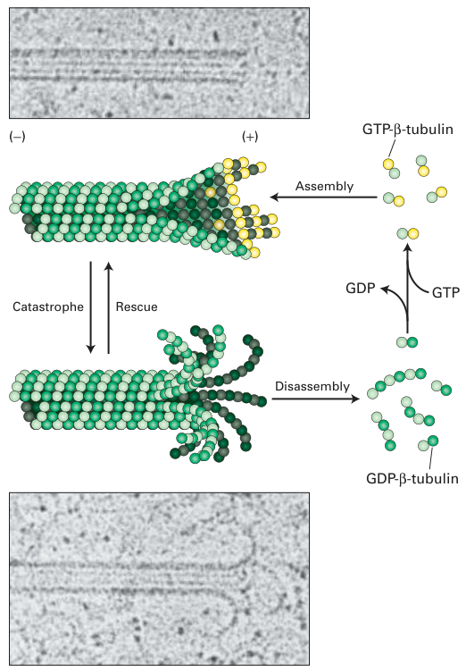
| Catastrophe | 灾变 |
| Rescue | 救援 |
| Assembly | 组装 |
| Disassembly | 解聚 |
| GDP | GDP |
| GTP | GTP |
| GTP-β-tubulin | GTP-β-微管蛋白 |
| GDP-β-tubulin | GDP-β-微管蛋白 |
正在解聚的微管如何能突然被救援而重新生长？最近有人为这个令人困惑的问题提出了一个可能的答案。研究者使用一种只识别GTP-β-微管蛋白而不识别GDP-β-微管蛋白的抗体，发现GTP-β-微管蛋白"岛"可以沿组装好的微管全长持续存在。看来很可能的情形是，当正在解聚的微管遇到这些GTP-β-微管蛋白岛之一时，解聚会暂停，并可能引发一次救援。
局部组装与"搜寻与捕获"共同帮助组织微管
现在我们已介绍了与微管组织和(+)端动态相关的两个主要概念：微管从称为MTOC的局部位点组装而来，而单根微管可以经历动态不稳定性。这两个过程共同决定了微管在细胞中的分布。
在培养中生长的间期细胞里，微管不断从中心体成核并向外伸展，随机"搜寻"细胞质空间。灾变与救援的频率，加上生长和缩短速率，决定了每条微管的长度：如果微管灾变频率高而救援频率低，它就会缩回中心体并消失；而如果它灾变很少且容易被救援，就会继续生长。如果搜寻中的微管遇到细胞结构或细胞器上的合适靶标，微管末端就可能附着到该结构上。细胞器或细胞结构被微管"捕获"可以稳定其(+)端并保护它免于灾变，而未附着的微管解聚频率更高。因此，微管(+)端的动态是决定微管生命周期与功能的一个非常重要的因素。"搜寻与捕获"是决定细胞中微管整体组织方式的机制的一部分。此外，通过改变成核速率或局部的微管动态与捕获位点，细胞可以迅速改变其微管的整体分布。我们后面会看到，细胞进入有丝分裂时发生的正是这种情况。
影响微管蛋白聚合的药物在实验中与疾病治疗中都有用
微管蛋白的保守性以及它们对诸如有丝分裂等关键过程的必需参与，使它们成为影响聚合或解聚的天然药物与合成药物的理想靶标。历史上，第一种这类药物是秋水仙素，它存在于秋水仙（meadow saffron）的提取物中，能结合微管蛋白二聚体从而使它们不能聚合成微管。由于大多数微管处于二聚体与聚合物之间的动态状态，加入秋水仙素会把细胞质中所有游离的二聚体螯合起来，导致微管因自然周转而丢失。用秋水仙素短时间处理培养细胞，会使所有细胞质微管解聚，只留下含微管蛋白、较为稳定的中心体（图18-12a）。当洗去秋水仙素使微管得以重新生长时，可以看到它们从中心体长出，这揭示了中心体成核组装新微管的能力（图18-12b）。
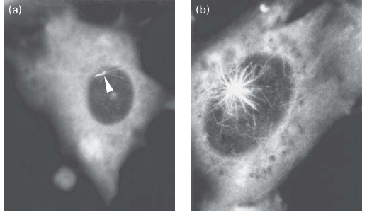
数百年来，秋水仙素一直被用于缓解急性痛风的关节疼痛——一位著名的患者是英格兰国王亨利八世，他曾接受秋水仙素治疗以缓解这一病痛。低剂量的秋水仙素通过降低白细胞的微管动态性来缓解痛风引起的炎症，使白细胞无法有效地迁移到炎症部位。
除秋水仙素外，还有许多其他药物能结合微管蛋白二聚体并阻止其形成聚合物。这些药物包括鬼臼毒素（podophyllotoxin，来自杜松）和诺考达唑（一种合成药物）。
紫杉醇（taxol）是来自太平洋紫杉的一种植物生物碱，它能结合微管并使其稳定、抵抗解聚。由于紫杉醇通过抑制有丝分裂使细胞停止分裂，它已被用于治疗某些癌症，例如乳腺癌和卵巢癌，这些癌症的细胞对该药物特别敏感。■
- 单根微管的(+)端可以经历动态不稳定性，表现为生长期与快速缩短期交替出现（见图18-10）。
- 微管中的大部分β-微管蛋白结合有GDP。在生长中的微管里，(+)端有一个由少数含GTP-β-微管蛋白和GDP-Pi-β-微管蛋白的二聚体组成的帽，末端平钝或略微张开。缩短中的微管丢失了该帽，使末端含GDP-β-微管蛋白的原丝向外剥离并解聚（见图18-11）。
- 生长中的微管把GTP水解产生的能量储存在微管晶格中，因此它们在解聚时具有做功的潜力。
- 从中心体组装并表现出动态不稳定性的微管可以"搜寻"细胞质中具有合适靶标的结构或细胞器，并将它们"捕获"，从而使微管(+)端稳定。通过这种方式，组装与"搜寻与捕获"相配合，可以参与决定细胞中微管的整体分布。
18.3 微管结构与动态变化的调控
微管的管壁由αβ-微管蛋白二聚体构成，高度纯化的αβ-微管蛋白在体外能够组装成微管。但在体外，微管的组装可因稳定型微管相关蛋白（MAP）的存在而大大增强。稳定型MAP只是与微管中的微管蛋白相互作用的一类蛋白；其他类别的MAP使微管去稳定或改变其生长特性。本节将讨论各类MAP。微管结构与动态变化的调控对细胞正常行使功能至关重要。正如我们稍后将看到的，微管是动物细胞中细胞器的主要组织者，其稳定性与动态变化被量身定制以适应细胞在任意给定时刻的特定功能。例如，当细胞进入有丝分裂时，微管的动态变化会急剧增强，以便细胞构建出新的微管构型——有丝分裂纺锤体。
微管由侧向结合蛋白稳定
有若干类不同的蛋白能稳定微管，其中许多表现为细胞类型特异性表达。研究得最充分的MAP之一是tau蛋白家族的成员，该家族既包括tau本身，也包括称为MAP2和MAP4的蛋白。tau和MAP2是神经元蛋白，而MAP4由其他细胞类型表达，通常不存在于神经元中。
这些蛋白采用模块化设计，含有两个关键结构域。第一个结构域由一段带正电的18个残基的序列组成，重复三到四次，与带负电的微管表面结合。第二个结构域以直角向外伸出微管之外（图18-13）。tau蛋白被认为能稳定微管，同时充当微管之间的间隔物。MAP2仅见于神经元的树突中，在那里它形成微管之间的纤维状横桥，并把微管与中间丝连接起来。tau比大多数其他MAP都小得多，存在于轴突和树突中。这种特异性的基础至今仍是个谜。
当稳定型MAP包被微管的外壁时，它们可以提高微管的生长速率或降低灾变频率。在许多情况下，MAP的活性受其投射结构域可逆磷酸化的调控。被磷酸化的MAP无法与微管结合；因此磷酸化促进微管的解聚。例如，微管亲和力调节激酶（MARK/Par-1）是tau蛋白的关键调节因子。包括MAP4在内的一些MAP还会被细胞周期蛋白依赖性激酶（CDK）磷酸化，该激酶在细胞周期进程中控制蛋白活性方面起主要作用（见第19章）。
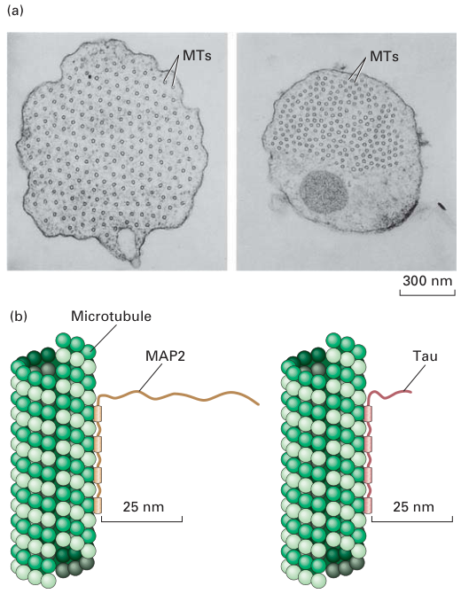
| MTs | 微管 |
| Microtubule | 微管 |
| MAP2 | MAP2 |
| Tau | tau蛋白 |
+TIPs调控微管(+)端的性质与功能
除侧向结合的MAP外，人们还鉴定出了与微管(+)端结合的MAP。在许多情况下，它们只与正在生长的(+)端结合，而不与正在缩短的(+)端结合（图18-14a、b）。这一类MAP被称为+TIP，即正端追踪蛋白。尽管+TIP识别正在生长的微管(+)端的机制多种多样，但一种称为EB1的主要+TIP与正在生长的微管(+)端的结合，被认为是通过与正在生长的微管末端含GTP-β-微管蛋白和GDP-Pi-β-微管蛋白的帽相互作用而发生的（图18-14c）：EB1优先结合这一结构，而不结合带GDP-β-微管蛋白的高度弯曲的解聚末端，也不结合微管主体中笔直的原丝。大多数其他+TIP要么通过结合EB1、要么需要EB1才能与(+)端结合，通常被说成是"搭便车"于EB1之上（图18-14d）。
其他+TIP可以通过增强组装或抑制灾变来促进微管生长。例如，一种称为XMAP215的蛋白含有四个所谓的TOG结构域。这些结构域既能结合游离的αβ-微管蛋白二聚体，也能结合微管生长端原丝轻微弯曲的区域。通过结合到生长端并把更多αβ-微管蛋白二聚体带到那里，XMAP215有效提高了局部的αβ-微管蛋白浓度，从而增强微管的组装。另一类称为CLASP的蛋白具有相关的TOG结构域，但并不增强组装。相反，它们结合到轻微弯曲的生长端并抑制灾变。
+TIP在微管的一生中非常重要，因为它们能以多种方式改变微管的性质。第一，诸如EB1和XMAP215这样的蛋白通过增强(+)端的聚合来促进微管生长。第二，另一些+TIP，如CLASP，能降低灾变频率，从而也促进微管生长。第三类+TIP把微管(+)端连接到其他细胞结构上，如细胞皮层、F-肌动蛋白，以及我们稍后在讨论有丝分裂时将看到的染色体；这一动态系统的一个关键特征是，当正在"搜寻"的微管末端的+TIP遇到合适的目标时，微管就能被"捕获"并稳定下来。还有另一些+TIP把微管(+)端连接到膜上；例如，与内质网跨膜蛋白STIM的连接促进管状内质网的微管依赖性延伸。
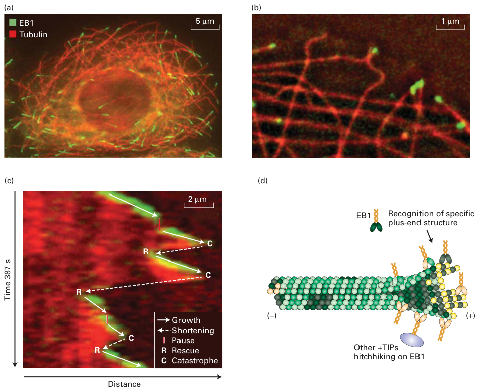
| EB1 | 末端结合蛋白（EB1） |
| Tubulin | 微管蛋白 |
| Distance | 距离 |
| Time | 时间 |
| Growth | 生长 |
| Shortening | 缩短 |
| Pause | 暂停 |
| Rescue | 救援 |
| Catastrophe | 灾变 |
| Other +TIPs | 其他+TIP |
| hitchhiking on EB1 | 搭便车于EB1 |
| Recognition of specific plus-end structure | 对特定正端结构的识别 |
其他末端结合蛋白调控微管的解聚
也存在增强微管解聚的机制。虽然微管动态变化的大部分调控似乎发生在(+)端，但在某些情况下，例如有丝分裂中，它可以在两端发生。
目前已知有多种使微管去稳定的机制。其中之一涉及驱动蛋白13家族的蛋白。
正如我们将在18.4节中看到的，大多数驱动蛋白是分子马达，但驱动蛋白13蛋白是一类独特的驱动蛋白，它们结合微管蛋白原丝的末端并使其弯曲成GDP-β-微管蛋白的构象。随后它们促进末端微管蛋白二聚体的移除，从而大大增强灾变频率（图18-15a）。它们以催化方式发挥作用，即它们需要水解ATP才能逐个移除末端的微管蛋白二聚体。
另一种称为Op18/stathmin的蛋白也能提高灾变速率。它最初是作为在某些癌症中高度过表达的蛋白被鉴定出来的；其名称的一部分（癌蛋白18，Oncoprotein 18）即由此而来。Op18/stathmin是一种小蛋白，它以弯曲的、类似GDP-β-微管蛋白的构象结合两个微管蛋白二聚体（图18-15b）。它可能通过增强末端微管蛋白二聚体中GTP的水解，并协助该二聚体从微管末端解离而发挥作用。正如对微管末端调控因子的预期，它受到多种激酶磷酸化的负调控。事实上，已发现Op18/stathmin在运动细胞的前缘附近被磷酸化而失活，这有助于微管优先朝细胞前方生长。
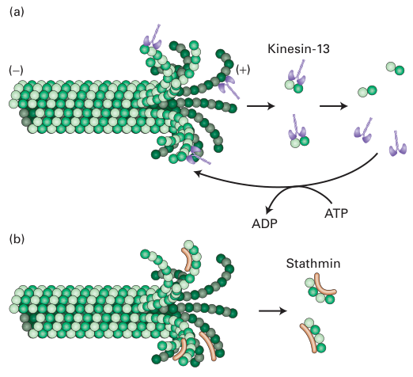
| Stathmin | 斯他敏 |
| ADP | ADP |
| ATP | ATP |
| Kinesin-13 | 驱动蛋白13 |
18.4 驱动蛋白与动力蛋白：基于微管的马达蛋白
细胞内的细胞器常常沿细胞质中界限分明的路线被运输数微米之远，并被递送到细胞内特定的位置。仅靠扩散无法解释这类运输过程的速率、方向性和目的地。早期用鱼鳞色素细胞和神经元进行的实验首次证明，微管在多种"货物"的细胞内运输中充当轨道。
如前所述，微管的聚合与解聚可利用GTP水解提供的能量做功。此外，马达蛋白由ATP水解驱动，沿微管移动。已知有两大家族马达蛋白——驱动蛋白与动力蛋白——介导沿微管的运输。本节讨论这些马达蛋白如何工作，以及它们在间期细胞中所扮演的角色。在随后几节中，我们将讨论它们在纤毛和鞭毛中以及在有丝分裂中的功能。
轴突中的细胞器沿微管双向运输
神经元必须不断向轴突终末输送新物质——蛋白质和膜——以补充在与另一个细胞形成的连接（突触）处通过胞吐释放神经递质时所损失的部分（见第22章）。由于蛋白质和膜主要在胞体中合成，这些物质必须沿轴突向下运输到突触区，在某些神经元中轴突可长达1米。这种物质运输是在微管上完成的，所有微管都以(+)端朝向轴突终末（见图18-5e）。
经典脉冲-追踪实验的结果表明，轴突运输是自胞体沿轴突向下进行的。在这些实验中，将放射性氨基酸显微注射到脊髓附近的背根神经节中，使其掺入脊髓神经元的蛋白质，随后追踪这些细胞轴突上的放射性。另一些实验表明，运输也可以朝相反方向、即朝向胞体进行。顺向运输从胞体走向轴突终末，与轴突生长和突触囊泡的递送有关。在相反的逆向方向上，来自轴突终末的"旧"膜沿轴突迅速移向胞体，并在那里可能于溶酶体中被降解。这类实验的结果还揭示，不同物质的移动速度不同（图18-16）。移动最快的物质由有膜包被的囊泡组成，速度约为3 mm/s，即250 mm/天——从你背部的胞体沿轴突运到止于你大脚趾的末端约需4天。移动最慢的物质包括微管蛋白亚基和神经丝（神经元中的中间丝），每天只移动不到1毫米。线粒体等细胞器则以中等速度沿轴突移动。
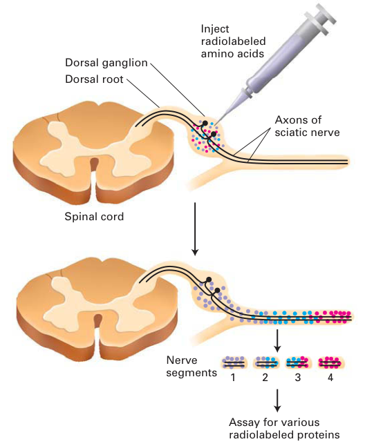
| Nerve | 神经 |
| Inject | 注射 |
| segments | 节段 |
| Dorsal root | 背根 |
| Spinal cord | 脊髓 |
| Dorsal ganglion | 背根神经节 |
| sciatic nerve | 坐骨神经 |
| Axons of sciatic nerve | 坐骨神经的轴突 |
| amino acids | 氨基酸 |
| Assay for various radiolabeled proteins | 多种放射性标记蛋白的检测 |
神经生物学家长期以来大量利用乌贼巨轴突来研究细胞器沿微管的运动。巨轴突参与调控乌贼的喷水推进系统，其名不虚传，直径可达1 mm，约为哺乳动物轴突平均直径的100倍。此外，像挤牙膏一样挤压该轴突可将其细胞质（又称轴浆）挤出，随后即可用视频显微术进行观察。在这个无细胞体系中，囊泡沿微管的运动需要ATP，其速率与完整细胞中的轴突运输相似，并且可向顺向和逆向两个方向进行（图18-17）。对乌贼巨轴突细胞质同一区域的电镜观察显示，细胞器附着在单根微管上。这些开创性的体外实验明确证明，细胞器沿单根微管移动，且其运动需要ATP。
将带绿色荧光蛋白（GFP）标签的神经丝注入培养细胞的实验结果表明，神经丝沿轴突向下移动时会频繁停顿。尽管神经丝的峰值速度与快速移动的囊泡相近，但众多的停顿降低了其平均运输速率。这些结果提示，快速轴突运输与慢速轴突运输之间并无本质区别，尽管神经丝运输为何会周期性停止尚不清楚。
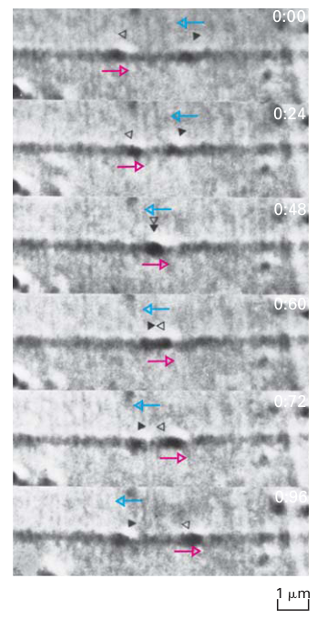
驱动蛋白1驱动囊泡沿轴突向微管(+)端的顺向运输
负责顺向细胞器运输的蛋白最初是从轴突提取物中纯化得到的。研究者发现，当他们把三种成分——从乌贼轴突纯化得到的细胞器、不含细胞器的轴突胞质提取物，以及紫杉醇稳定的微管——混合时，可以看到细胞器以依赖ATP的方式在微管上移动。然而，如果省去轴突提取物，细胞器既不与微管结合，也不沿其移动。研究者由此得出结论：该提取物提供了一种既能把细胞器连接到微管上、又能带着它们沿微管运输的蛋白——即一种马达蛋白。他们纯化这种马达蛋白的策略基于对细胞器在微管上运动的进一步观察。已知如果ATP被水解为ADP，细胞器就会从微管上脱落。然而，如果加入不可水解的ATP类似物AMPPNP，细胞器仍与微管结合，但不移动。这些观察提示，在AMPPNP存在时，马达蛋白将细胞器与微管连接得很紧密，而当AMPPNP被ATP取代、ATP随后被水解为ADP时，马达蛋白便从微管上释放。通过寻找一种在AMPPNP存在时结合微管、加入ATP后又被释放的蛋白，研究者纯化出了这种马达蛋白，并将其命名为驱动蛋白。
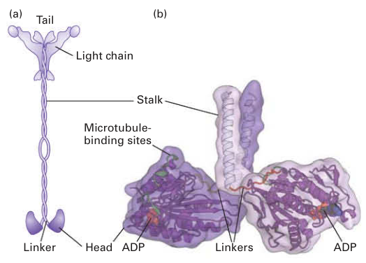
| Head | 头部 |
| Stalk | 柄部 |
| Tail | 尾部 |
| Light chain | 轻链 |
| Linker | 连接区 |
| Linkers | 连接区 |
| ADP | ADP |
| Microtubule-binding sites | 微管结合位点 |
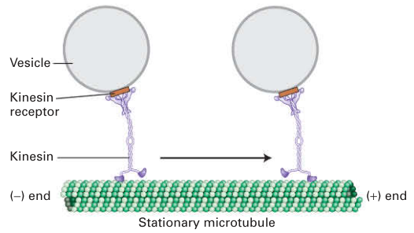
| (−) end | (−)端 |
| (+) end | (+)端 |
| Stationary microtubule | 固定微管 |
| Kinesin | 驱动蛋白 |
| Vesicle | 囊泡 |
| Kinesin receptor | 驱动蛋白受体 |
从乌贼巨轴突中分离得到的驱动蛋白1是由两条重链组成的二聚体，每条重链各结合一条轻链，总分子量约为380,000 Da。该分子由一对球状的N端头部结构域组成，它们通过一个短而柔性的连接区结构域与一条长的中央柄部相连，并以一对小的球状尾部结构域结尾，尾部结构域与轻链结合（图18-18）。每个结构域各司其职：头部结构域结合微管和ATP，负责驱动蛋白的马达活性；连接区结构域对向前运动至关重要；柄部结构域通过两条重链的卷曲螺旋相互作用（见图3-9）参与二聚化；尾部结构域则负责与货物膜上的受体结合。
驱动蛋白1依赖的囊泡运动可用体外运动实验来追踪，这类实验与用于研究肌球蛋白依赖运动的实验类似（见图17-23）。在其中一种实验中，将包被有驱动蛋白1的囊泡或微珠与稳定的微管制剂一起加到玻片上，在显微镜下观察。在ATP存在时，可观察到微珠沿微管朝一个方向移动。研究者发现，包被驱动蛋白1的微珠总是从微管的(−)端移向(+)端（图18-19）。因此，驱动蛋白1是一种朝向(+)端的微管马达蛋白，另有证据表明它介导细胞器沿轴突的顺向运输。
驱动蛋白构成一个功能多样的大型蛋白超家族
在发现驱动蛋白1之后，人们通过遗传筛选和分子生物学方法鉴定出许多具有相似马达结构域的蛋白。目前已知动物中的驱动蛋白有14个类别，其定义是与驱动蛋白1的马达结构域具有氨基酸序列同源性。驱动蛋白超家族的蛋白由人类基因组中约45个基因编码。尽管这些蛋白的功能尚未全部阐明，但一些研究得最透彻的驱动蛋白参与诸如细胞器、mRNA和染色体运输、微管滑动以及微管解聚等过程。
与不同类别的肌球蛋白马达一样，在各驱动蛋白家族中，保守的马达结构域与多种类别特异的非马达结构域融合在一起（图18-20）。驱动蛋白1有两条相同的重链和两条相同的轻链，而驱动蛋白2家族成员（也参与细胞器运输）则有两条不同但相关的重链马达结构域，以及第三条与尾部结合并连接货物的多肽。双极的驱动蛋白5家族成员有四条重链，形成双极马达，能交联反平行微管，并通过走向每根微管的(+)端使它们相互滑过。驱动蛋白14马达蛋白是已知唯一朝微管(−)端移动的类别；该类别在有丝分裂中发挥作用。驱动蛋白13家族成员有两个亚基，但保守的驱动蛋白结构域位于多肽的中部。驱动蛋白13蛋白没有马达活性；相反，它们是特殊的ATP水解蛋白，能增强微管末端的解聚（见图18-15）。
驱动蛋白1是一种高度持续性的马达
驱动蛋白1是如何沿微管移动的？与那些用于表征肌球蛋白（见图17-28和图17-29）的技术相似的光学陷阱（光镊）和荧光标记技术，已被用于研究驱动蛋白1如何沿微管移动，以及ATP水解如何转化为机械功。这类实验表明，它是一种高度持续性的马达，能沿微管"手递手"地行走数百个"步"而不与微管解离。在此过程中，这个双头分子以8 nm的步长从一个微管蛋白二聚体迈向下一个，沿微管内的同一条原丝行进。这种运动要求每个单独的头部迈出16 nm的步长。两个头部以高度协调的方式工作，因此始终有一个头部附着在微管上。
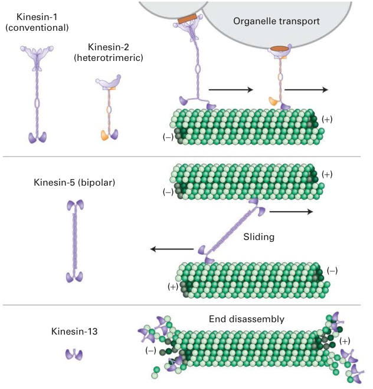
| Kinesin-1 (conventional) | 驱动蛋白1（常规型） |
| Kinesin-2 (heterotrimeric) | 驱动蛋白2（异源三聚体） |
| Kinesin-5 (bipolar) | 驱动蛋白5（双极） |
| Kinesin-13 | 驱动蛋白13 |
| Sliding | 滑动 |
| End disassembly | 末端解聚 |
| Organelle transport | 细胞器运输 |
如果我们从马达刚迈出一步之后开始看，驱动蛋白1运动的ATP循环最容易理解（图18-21a）。此时，马达有一个无核苷酸的前导头，它牢固地结合在原丝中的一个微管蛋白二聚体上；还有一个结合ADP的后随头，它与原丝结合较弱。ATP随后结合到前导头上（图18-21a，步骤1），这一结合诱导连接区结构域发生构象变化，使它不再指向后方，而是向前摆动并"对接"到与之相连的头部中。这一摆动使连接区结构域向前转动，而由于它连着后随头，便把后随头——就像抛出芭蕾舞演员一样——甩到成为前导头的位置（图18-21a，步骤2）。新的前导头找到微管上的下一个结合位点（图18-21a，步骤3和图18-21b）。前导头与微管的结合诱导前导头释放ADP，同时后随头将ATP水解为ADP和Pi，并释放Pi（图18-21a，步骤4）。此时ATP可以结合到前导头上，重复该循环，使该蛋白沿微管再迈出一步。
该循环有两个特征确保总有一个头部牢固地结合在微管上。第一，头部结构域在无核苷酸、ATP和ADP + Pi状态下与微管紧密结合，而在ADP状态下结合较弱。第二，两个头部之间可以通讯：当前导头结合微管并释放ADP时，它便从弱结合状态转变为紧密结合状态。这一变化传递给与微管紧密结合的、结合ATP的后随头。后随头受到刺激而水解ATP，释放Pi并转变为弱结合状态。由于该循环要求始终有一个头部牢固附着在原丝中的微管蛋白二聚体上，驱动蛋白1能沿微管迈出数千步而不与其解离。
作为细胞器的运输者，驱动蛋白1必须结合并运输正确的货物。它通过相应细胞器上的受体蛋白来实现这一点，这些受体蛋白与马达蛋白的尾部结构域结合。由于驱动蛋白1是一种ATP酶，因此在不需要时以及在运输后释放细胞器之后，将其活性失活以节省能量就很重要。为此，驱动蛋白1可以折叠成一种失活状态，其中尾部结构域与马达头部结构域相互作用，从而抑制其ATP酶活性和微管结合（图18-22）。当尾部结合货物相关受体蛋白时，马达解折叠并被激活（步骤1）。当被货物激活的马达复合物遇到微管时，它便运输该细胞器（步骤2）。细胞器递送完成后，驱动蛋白1从货物上释放，并通过重新折叠成头-尾抑制状态而失活。
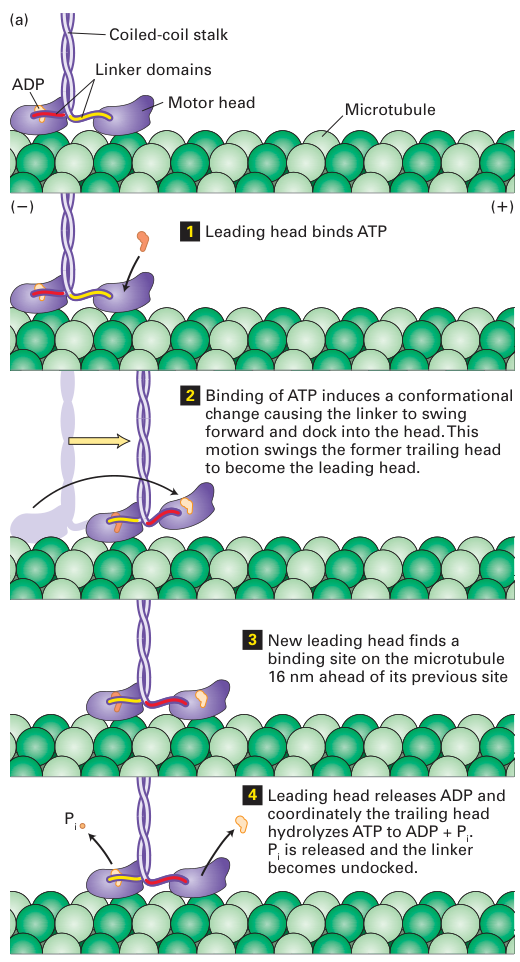
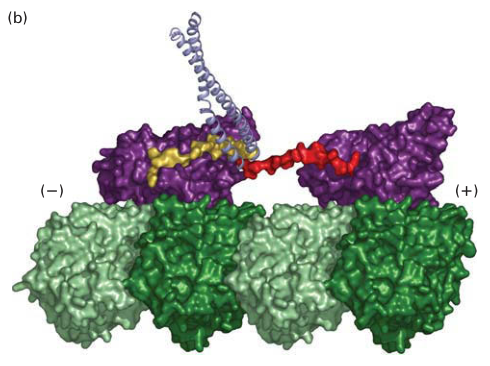
| Leading head binds ATP | 前导头结合ATP |
| Motor head | 马达头部 |
| Linker domains | 连接区结构域 |
| Coiled-coil stalk | 卷曲螺旋柄部 |
| Microtubule | 微管 |
| ADP | ADP |
| Pi | Pi |
当驱动蛋白头部的X射线晶体结构被解析出来时，它揭示了一个重大意外——其催化核心与肌球蛋白的催化核心具有相同的总体结构（图18-23）！尽管这两种蛋白之间没有氨基酸序列保守性，情况依然如此，这有力地说明趋同进化两次产生了同一种能够利用ATP水解来产生功的折叠。此外，在Ras等小GTP结合蛋白中也可见到同类型的三维结构，这些蛋白在GTP水解时会发生构象变化（见图15-7）。
动力蛋白马达将细胞器运向微管的(−)端
除了主要介导细胞器顺向地朝(+)端运输的驱动蛋白马达之外，细胞还使用另一种马达蛋白——细胞质动力蛋白——将细胞器逆向地朝微管(−)端运输。这种马达蛋白非常大，由两个大亚基（>500 kDa）、两个中间亚基和两个小亚基组成。它不仅负责轴突中细胞器依赖ATP地朝微管(−)端的逆向运输，还承担我们将在随后几节中讨论的许多其他功能。与肌球蛋白和驱动蛋白相比，动力蛋白相关蛋白家族的多样性并不高。
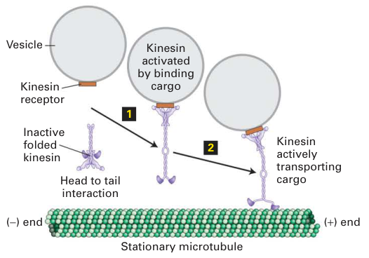
| (−) end | (−)端 |
| (+) end | (+)端 |
| Stationary microtubule | 固定微管 |
| Inactive folded kinesin | 失活折叠的驱动蛋白 |
| Head-to-tail interaction | 头-尾相互作用 |
| Kinesin activated by binding cargo | 结合货物后被激活的驱动蛋白 |
| Kinesin actively transporting cargo | 正在主动运输货物的驱动蛋白 |
| Vesicle | 囊泡 |
| Kinesin receptor | 驱动蛋白受体 |
与驱动蛋白1一样，细胞质动力蛋白是一个双头分子，以两条相同或近乎相同的重链为核心构成。然而，由于马达结构域极其庞大，人们对动力蛋白机械化学活性的了解较为有限。一条动力蛋白重链由若干不同的结构域组成（图18-24a）。第一个是茎部，其他动力蛋白亚基与之结合，它通过另一个蛋白复合物——动力蛋白激活蛋白（dynactin）——与货物结合。重链的下一个部分是一条连接区，它在依赖ATP的马达活动中起关键作用。重链的很大一部分构成头部，其中含有AAA ATP酶结构域，该结构域由六个重复序列组成，组装成花朵状结构，ATP酶活性就位于其中。柄部嵌插在第四个和第五个AAA重复之间，它从该结构伸出，并含有微管结合区。
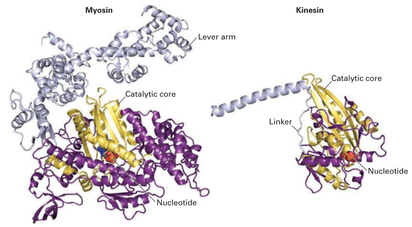
| Myosin | 肌球蛋白 |
| Kinesin | 驱动蛋白 |
| Catalytic core | 催化核心 |
| Lever arm | 杠杆臂 |
| Linker | 连接区 |
| Nucleotide | 核苷酸 |
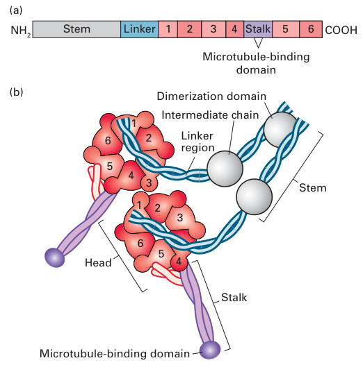
| Stem | 茎部 |
| Linker region | 连接区 |
| Head | 头部 |
| Stalk | 柄部 |
| Microtubule-binding domain | 微管结合结构域 |
| Intermediate chain | 中间链 |
| Dimerization domain | 二聚化结构域 |
| NH2 | NH2 |
| COOH | COOH |
电镜观察结合近来获得的动力蛋白重链结构的X射线图像，使我们对动力蛋白可能如何工作有了初步认识。第一个AAA重复可能是唯一参与将ATP水解转化为机械功的重复。在没有核苷酸时，动力蛋白与微管结合，连接区是直的，横跨AAA结构域并与第一个和第五个AAA重复结合。ATP结合后，动力蛋白从微管上解离，连接区弯曲，此时横跨在第二个和第三个AAA重复之间（"冲程前"；图18-25a和b，左侧图幅）。在与微管相互作用以及ATP水解并释放Pi之后，连接区变直。这一变直就是动力冲程，将货物运向微管的(−)端（"冲程后"；图18-25a和b，右侧图幅）。ADP被释放，马达头部仍结合在微管上。当ATP结合时，头部被释放，该循环再重复一步。
与驱动蛋白1不同，细胞质动力蛋白不能独自介导货物运输。相反，动力蛋白相关的运输需要诸如dynactin之类的调控因子，dynactin是一个大型蛋白复合物，将动力蛋白与其货物连接起来并调控其活性（图18-26）。dynactin由11种不同类型的亚基组成，在功能上组织为两个结构域。一个结构域以一条肌动蛋白亚基和八份肌动蛋白相关蛋白Arp1组装成的一条短丝为核心。该丝对应于(+)端的一端由CapZ封端，CapZ正是结合肌动蛋白丝(+)端的那个封端蛋白（见图17-12）；若干其他亚基则与(−)端结合。这个含Arp1的结构域负责结合货物。dynactin的第二个结构域由一个称为p150Glued的长蛋白组成，它含有动力蛋白结合位点，并在其一端还有一个微管结合位点。将两个dynactin结构域连在一起的是一个称为dynamitin的蛋白——之所以这样命名，是因为当它过表达时，会使这两个结构域解离（或"吹散"），从而形成无功能的复合物。这一特性在实验中非常有用，因为它使研究者能够鉴定出那些依赖动力蛋白与dynactin相互作用的过程——在过表达dynamitin的细胞中，这些过程会被破坏。
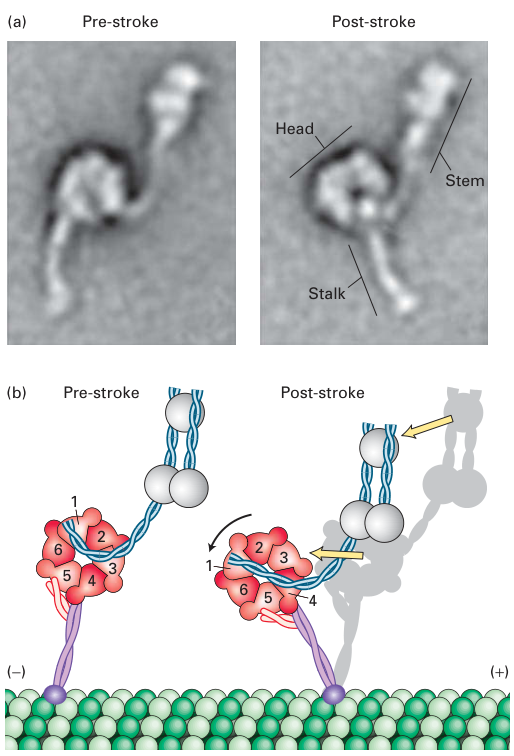
| Head | 头部 |
| Stem | 茎部 |
| Stalk | 柄部 |
| Pre-stroke | 冲程前 |
| Post-stroke | 冲程后 |
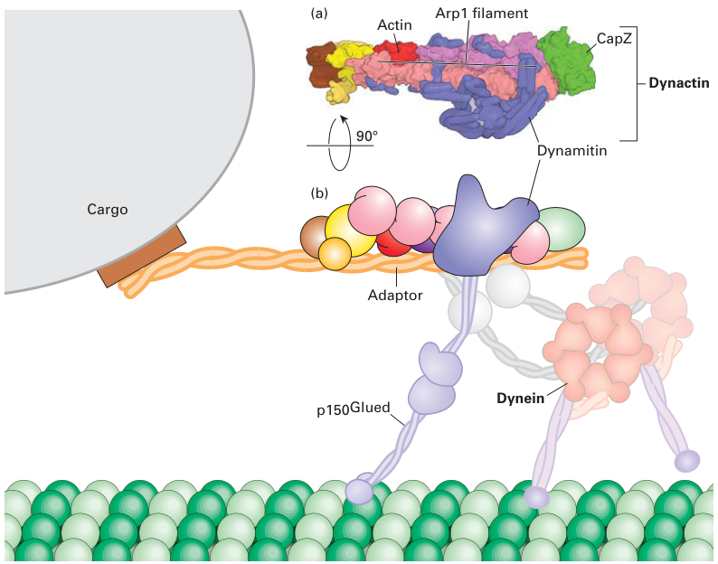
| CapZ | CapZ |
| Actin | 肌动蛋白 |
| Adaptor | 接头蛋白 |
| Arp1 filament | Arp1丝 |
| p150Glued | p150Glued |
| Dynamitin | Dynamitin |
| Dynactin | 动力蛋白激活蛋白（dynactin） |
| Dynein | 动力蛋白 |
| Cargo | 货物 |
近期研究表明，动力蛋白和dynactin都可以以失活形式存在。然而，当它们遇到合适的货物接头蛋白时，这三种分子便形成一个三联体复合物，其中dynactin被激活而结合微管，动力蛋白的运输也变得高度持续，这是长距离运输货物的一项关键特性（图18-26b）。在某些情况下，动力蛋白必须以失活形式被运送到特定位置，然后在那里被激活。例如，已发现dynactin的p150Glued亚基结合EB1，使动力蛋白得以与微管正在生长的(+)端结合。既然动力蛋白是一种朝向(−)端的马达，它为什么要与微管(+)端结合呢？近期研究提示，当动力蛋白通过dynactin-EB1相互作用与微管(+)端结合时，它被维持在一种失活构象。当正在生长的微管到达细胞皮层时，失活的动力蛋白和dynactin遇到定位在那里的激活因子。此时动力蛋白被激活，与皮层结合，并牵拉把它送到那里的微管！已证明这一机制有助于酵母中有丝分裂纺锤体的定向，它很可能也适用于其他情形。
除dynactin之外，动力蛋白还有其他调控因子。有一组蛋白参与调控脑发育过程中动力蛋白的活性，其中两个是LIS1和NudE。NudE将动力蛋白的中间链和轻链与LIS1连接起来（图18-27a）。LIS1随后与动力蛋白的ATP酶结构域相互作用，延长动力冲程的持续时间，使马达在高负载条件下更具持续性。LIS1的缺陷会导致致死性疾病Miller-Dieker无脑回畸形（该蛋白即由此得名）；无脑回畸形意为"平滑脑"，因为此类患者脑中缺乏皮质的沟回（图18-27b）。LIS1的突变会导致早期发育中神经元有丝分裂以及神经元从脑室区向皮质板迁移两方面的缺陷，从而造成平滑脑表型、智力发育缺陷以及许多其他异常。■
驱动蛋白与动力蛋白协同完成细胞各处的细胞器运输
动力蛋白和驱动蛋白家族成员在细胞中依赖微管的细胞器组织中均发挥重要作用（图18-28）。由于微管的朝向由MTOC固定，运输方向——朝向还是背离细胞中心——取决于马达蛋白。例如，高尔基复合体聚集在中心体附近，即微管(−)端所在之处，并由动力蛋白-dynactin驱动到那里。此外，从内质网产生的分泌性货物由动力蛋白-dynactin运送到高尔基体。相反，内质网散布在整个细胞质中，由驱动蛋白1运送到那里，驱动蛋白1朝微管周边的(+)端移动。内吞途径的一些细胞器与动力蛋白-dynactin结合，包括晚期内体和溶酶体。已证明驱动蛋白可运输线粒体以及非膜性货物，例如编码发育过程中需要定位的蛋白的特定mRNA。
我们已经看到驱动蛋白1如何沿轴突顺向运输细胞器。当马达到达轴突末端时会发生什么？答案是，它搭乘由细胞质动力蛋白运输的细胞器逆向返回。因此，驱动蛋白1和动力蛋白可以与同一个细胞器结合，因此必定存在某种机制在激活一种马达的同时关闭另一种，尽管这类机制尚未被完全理解。
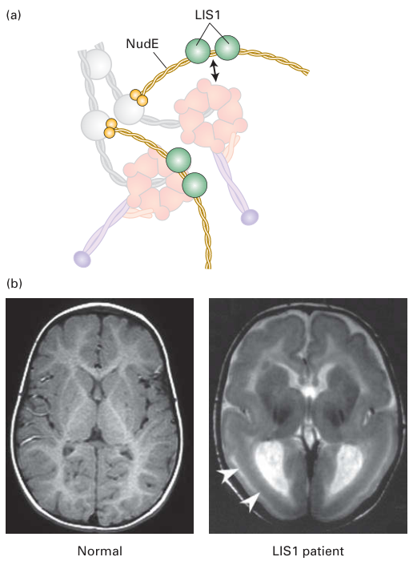
| LIS1 | LIS1 |
| NudE | NudE |
| Normal | 正常 |
| LIS1 patient | LIS1患者 |
我们对基于微管的细胞器运输调控的认识，很多来自对鱼（如神仙鱼）或蛙黑素细胞的研究。黑素细胞是脊椎动物皮肤中的细胞，含有数百个充满黑色素的深色色素颗粒，称为黑素体。黑素细胞要么使其黑素体分散，此时皮肤颜色变深；要么使其聚集在细胞中心，此时皮肤颜色变浅（图18-29）。这些肤色的变化在鱼中由神经递质介导、在蛙中受激素调控，其作用是为鱼提供伪装，并增强蛙的社交互动。黑素体的运动由细胞内cAMP的变化介导，并依赖微管。研究涉及哪些马达的工作表明，黑素体分散需要驱动蛋白2，而黑素体聚集需要细胞质动力蛋白-dynactin。关于这些活动可能如何协调的最初线索来自这样一个发现：过表达dynamitin会同时抑制两个方向的黑素体运输。这一出人意料的结果在人们发现dynactin不仅结合细胞质动力蛋白、还结合驱动蛋白2——并可能协调这两种马达的活性——之后得到了解释。
动力蛋白和驱动蛋白2与同一细胞器的结合并不限于黑素体；最近有人提出，在某些细胞中，这两种马达可能协同作用，以恰当地定位晚期内体、溶酶体和线粒体。因此，细胞器与多种不同马达结合并非例外，而是一个正在浮现的主题。
微管蛋白修饰区分不同类别的微管及其对马达的可及性
不同类别微管的稳定性和功能受翻译后修饰的影响。尽管已检测到多种类型的修饰，我们在此仅讨论那些了解得最清楚的——赖氨酸乙酰化、去酪氨酸化、多聚谷氨酰化以及多聚甘氨酰化（图18-30a）——及其功能后果。
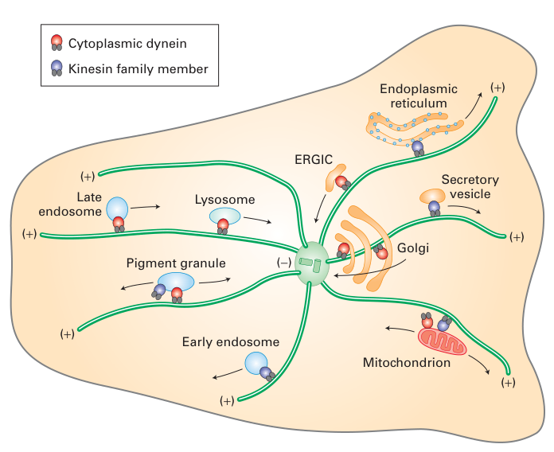
| Late endosome | 晚期内体 |
| Lysosome | 溶酶体 |
| Pigment granule | 色素颗粒 |
| Early endosome | 早期内体 |
| ERGIC | ERGIC |
| Endoplasmic reticulum | 内质网 |
| Secretory vesicle | 分泌囊泡 |
| Golgi | 高尔基体 |
| Mitochondrion | 线粒体 |
| Cytoplasmic dynein | 细胞质动力蛋白 |
| Kinesin family member | 驱动蛋白家族成员 |
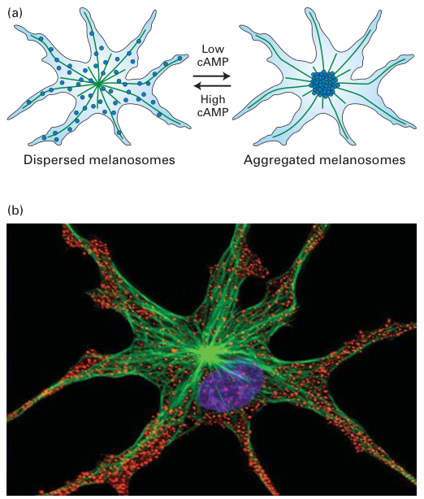
| Low cAMP | 低cAMP |
| High cAMP | 高cAMP |
| Dispersed melanosomes | 分散的黑素体 |
| Aggregated melanosomes | 聚集的黑素体 |
其中两种修饰只存在于α-微管蛋白上，而β-微管蛋白上没有。第一种是α-微管蛋白一个特定赖氨酸残基的ε-氨基的乙酰化，该残基位于微管内侧；带这种乙酰化赖氨酸的微管见于稳定的微管结构，如中心粒、基体和初级纤毛（初级纤毛将在18.5节讨论）。事实上，无法乙酰化微管蛋白的细胞其初级纤毛有缺陷，而无法去除该乙酰化的细胞则具有异常稳定的初级纤毛。α-微管蛋白的第二种修饰与其C端酪氨酸有关。这种酪氨酸可被一种羧肽酶特异性地去除，该酶只有结合在微管表面时才起作用，并在那里依次去除α-微管蛋白亚基的C端酪氨酸。这样去酪氨酸化的微管更稳定，因为它们对驱动蛋白13家族解聚蛋白的解聚作用更具抗性。此外，在迁移细胞中，这些更稳定的微管通常朝向细胞的前部。当去酪氨酸化的微管解聚时，αβ-二聚体中的α-微管蛋白亚基由一种只作用于可溶性微管蛋白的酪氨酸连接酶重新加上C端酪氨酸，于是该αβ-微管蛋白二聚体便可用于另一根正在生长的微管的延伸。
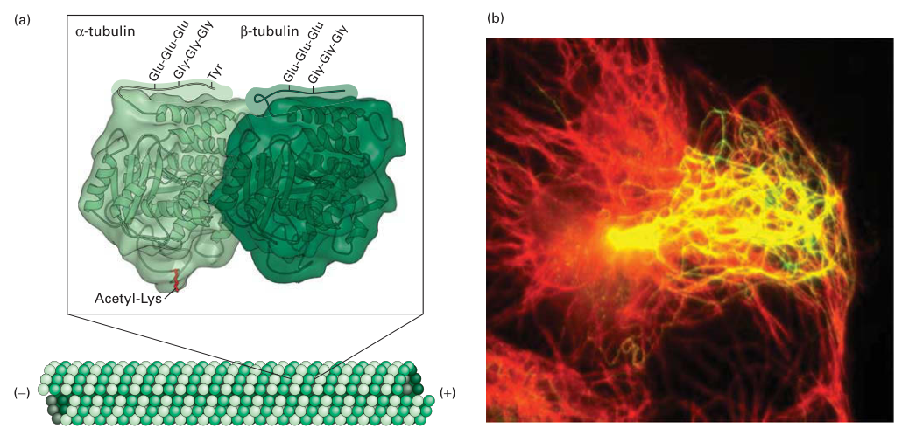
| Acetyl-Lys | 乙酰化赖氨酸 |
| α-tubulin | α-微管蛋白 |
| β-tubulin | β-微管蛋白 |
| Glu-Glu-Glu | Glu-Glu-Glu |
| Gly-Gly-Gly | Gly-Gly-Gly |
| Tyr | 酪氨酸 |
α-微管蛋白和β-微管蛋白的C端区域都富含谷氨酸残基，特定的酶可以修饰这些残基。这些修饰只在微管组装之后才发生。微管蛋白尾部可通过多聚谷氨酰化被修饰，即一条谷氨酸残基链连接到一个特定的谷氨酸残基上；也可通过多聚甘氨酰化被修饰，即一条甘氨酸残基链被加到另一个谷氨酸残基上。目前认为这两种修饰是互斥的，因此如果某个微管蛋白亚基被多聚甘氨酰化修饰，它就免于多聚谷氨酰化，反之亦然。与去酪氨酸化一样，多聚谷氨酰化能增强微管的稳定性。
微管蛋白的这些翻译后修饰不仅影响微管的稳定性，还能影响分子马达与微管相互作用的能力（图18-30b）。驱动蛋白1优先与去酪氨酸化和乙酰化的微管结合，因此这些修饰可能对神经元中募集该马达进行轴突运输很重要。正如我们在图18-5e中提到的，神经元树突和轴突中的微管组织方式不同。轴突中的微管通过乙酰化和去酪氨酸化被稳定，这使驱动蛋白1能优先与它们结合以进行轴突运输。多聚谷氨酰化在纤毛和鞭毛的摆动中起关键作用，我们将在下一节讨论。
阐明微管蛋白翻译后修饰对微管功能及基于微管的马达有何影响的研究都相当新近；可以预期，未来的研究将揭示出多种"密码"，用以区分不同类别的微管并使它们特化以执行特定功能。
- 驱动蛋白1是一种朝向微管(+)端的ATP依赖性马达蛋白，运输有膜包被的细胞器（见图18-19）。
- 驱动蛋白1由两条重链（每条各有一个N端马达结构域）和两条与货物结合的轻链组成（见图18-18）。
- 驱动蛋白超家族包含在间期细胞和有丝分裂细胞中发挥作用的马达，它们运输细胞器并使反平行微管相互滑过。该超家族包含一个类别——驱动蛋白13，它不具运动性，而是使微管末端不稳定（见图18-20）。
- 驱动蛋白1是一种高度持续性的马达，因为它在两个头部之间协调ATP水解，使始终有一个头部牢固结合在微管上（见图18-21）。
- 驱动蛋白1可以以无活性的折叠构象存在，也可以以与货物结合的伸展构象存在（见图18-22）。
- 细胞质动力蛋白是一种朝向微管(−)端的ATP依赖性马达，它与dynactin复合物和货物接头蛋白结合以运输货物（见图18-24和图18-26）。
- 驱动蛋白和动力蛋白与许多不同的细胞器结合，以组织它们在细胞中的位置（见图18-28）。
- 微管蛋白的翻译后修饰可影响微管的稳定性，并调控它们与基于微管的马达相互作用的能力。
18.5 纤毛与鞭毛：基于微管的表面结构
纤毛和鞭毛是质膜上相关的、以微管为基础并被膜包被的延伸结构，从许多原生动物和大多数动物细胞表面伸出。在特定上皮的表面存在大量可运动的纤毛，例如衬贴在气管内表面的那些（见图4-35），它们以协调的波浪式摆动来推动液体。动物细胞的鞭毛比纤毛长，但结构非常相似，可推动细胞（如精子）在液体中前进。纤毛和鞭毛含有许多不同的基于微管的马达：轴丝动力蛋白负责鞭毛和纤毛的摆动，而驱动蛋白2和胞质动力蛋白则负责鞭毛和纤毛的组装与更新。
真核生物的纤毛和鞭毛含有由动力蛋白马达桥接的长二联体微管
纤毛和鞭毛的长度从几微米到超过2 mm不等（某些昆虫的精子鞭毛更长）。它们具有一束中央微管，称为轴丝，其构成为所谓的9 + 2排列，即九根二联体微管围绕一对中央的单体微管，这对单体微管在超微结构上与其他微管不同（图18-31a, b）。九个外二联体中的每一个都由一根含13条原丝的A微管和一根含10条原丝的B微管组成（见图18-4）。纤毛和鞭毛中的所有微管极性相同：(+)端位于远端末端。在细胞内的附着点处，轴丝与基体相连，基体是一个含有九根三联体微管的复杂结构（图18-31a）。
轴丝由三组蛋白质交联维持在一起（图18-31b）。两根中央单体微管之间通过周期性的桥彼此相连，就像梯子上的横档。第二组连接结构由连接蛋白（nexin）构成，将相邻的外二联体微管彼此连接。径向辐条从外二联体的每根A微管伸向中央对。
纤毛和鞭毛中存在的主要马达蛋白是轴丝动力蛋白，它是一种与胞质动力蛋白相关的大型多亚基蛋白。两排轴丝动力蛋白马达沿外二联体微管中每根A微管的长度周期性附着；这些马达称为内动力蛋白臂和外动力蛋白臂（见图18-31b）。正是这些动力蛋白马达与相邻二联体中B微管的相互作用，引起了纤毛和鞭毛的弯曲。
纤毛和鞭毛的摆动由外二联体微管的受控滑动产生
纤毛和鞭毛是能运动的结构，因为轴丝动力蛋白马达的激活会使它们弯曲。用视频显微镜仔细观察它们的运动可以发现，弯曲起始于纤毛或鞭毛的基部，然后沿结构传播（图18-32）。关于其发生机制的一条线索来自对分离轴丝的研究。在这些经典实验中，轴丝被温和地用只切割连接蛋白丝（nexin linker）的蛋白酶处理。当向处理过的轴丝中加入ATP时，二联体微管彼此滑过，因为附着在一个二联体A微管上的动力蛋白沿相邻二联体的B微管向下"行走"（图18-33b, c）。在连接蛋白丝完整的轴丝中，动力蛋白的作用会引起鞭毛弯曲，因为微管二联体彼此相连（图18-33a）。
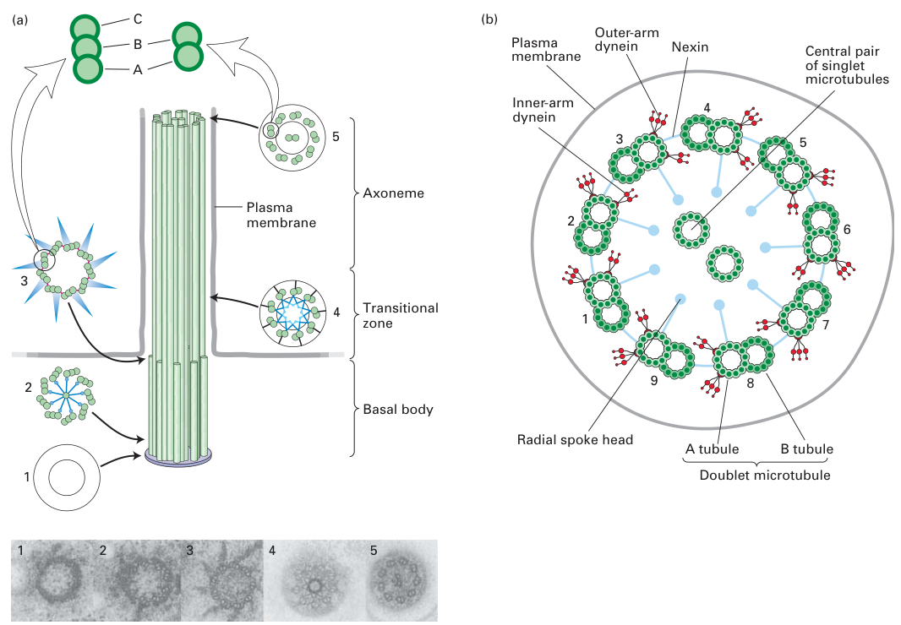
| Plasma membrane | 质膜 |
| Axoneme | 轴丝 |
| Transitional zone | 过渡区 |
| Basal body | 基体 |
| Inner-arm dynein | 内动力蛋白臂 |
| Outer-arm dynein | 外动力蛋白臂 |
| Radial spoke head | 径向辐条头 |
| A tubule | A微管 |
| B tubule | B微管 |
| Nexin | 连接蛋白（nexin） |
| Central pair of singlet microtubules | 中央对单体微管 |
| Doublet microtubule | 二联体微管 |
特定的动力蛋白亚群如何被激活，以及激活波如何沿轴丝传播，目前尚未完全清楚，但微管蛋白的翻译后修饰可能在其中起作用。回忆第18.4节，微管蛋白亚基的翻译后修饰可以影响微管与马达蛋白之间的相互作用。轴丝外二联体的B微管常发生多聚谷氨酰化，这种修饰强烈影响内动力蛋白臂与B微管的相互作用。由于内动力蛋白臂马达主要影响纤毛摆动的波形，因此纤毛的这一方面功能在无法进行多聚谷氨酰化的突变体中受到损害。
鞭毛内运输将物质沿纤毛和鞭毛双向运送
尽管轴丝动力蛋白参与纤毛和鞭毛的弯曲，但近年来在这些结构中观察到了另一种类型的运动。对双鞭毛绿藻莱茵衣藻（Chlamydomonas reinhardtii）鞭毛的仔细检查发现，细胞质颗粒以约2.5 μm/s的恒定速度向鞭毛尖端移动（顺向运动），另一些颗粒则以约4 μm/s的速度从尖端移向基部（逆向运动）。这种运动被称为鞭毛内运输（IFT），在纤毛和鞭毛中都会发生。
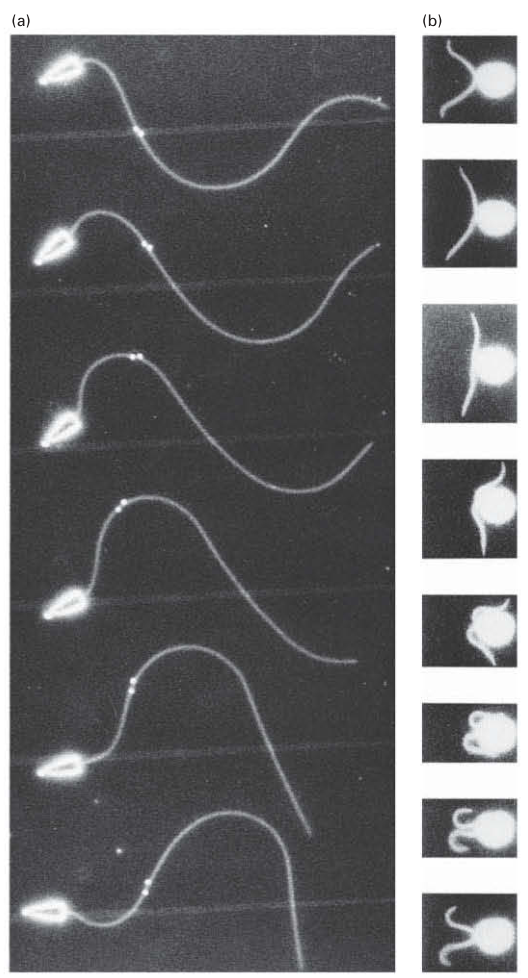
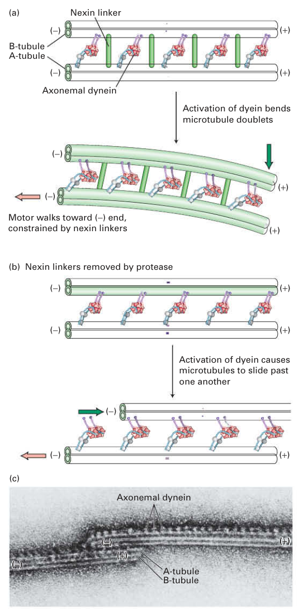
| A-tubule | A微管 |
| B-tubule | B微管 |
| Nexin linker | 连接蛋白丝（nexin link） |
| Axonemal dynein | 轴丝动力蛋白 |
| (+) end | 正端（+） |
| (−) end | 负端（−） |
光学显微镜和电子显微镜显示，这些颗粒在外二联体微管与质膜之间移动（图18-34）。对藻类突变体的分析表明，顺向运动由驱动蛋白2驱动，逆向运动由胞质动力蛋白驱动。
在衣藻鞭毛中运输的顺向和逆向IFT颗粒已被分离，其组成也已确定。它们由两个不同的蛋白质复合物组成，称为IFT复合物A和IFT复合物B。通过分析对这些复合物有影响突变的细胞的表型，人们发现复合物B是顺向IFT所必需的，而复合物A对逆向IFT很重要。尽管功能上有这种分工，两种复合物都沿两个方向运输。IFT颗粒的所有组分在含有纤毛的生物（如线虫、果蝇、小鼠和人类）中都有同源物，但在缺乏纤毛的酵母和植物的基因组中不存在这些颗粒，提示它们为IFT所特有。
IFT的功能是什么？因为鞭毛中所有微管的生长中(+)端都位于尖端，所以尖端是新的微管蛋白亚基和鞭毛结构蛋白添加的位点。此外，即使在鞭毛长度均一的细胞中，微管也在不断更新，组装和解聚都发生在鞭毛尖端。在缺乏驱动蛋白2的细胞中，鞭毛会缩短，提示IFT将新物质运送到尖端以供生长。由于IFT是一个持续发生的过程，驱动蛋白2分子到达尖端后会发生什么？逆向运输颗粒的动力蛋白马达又来自何处？值得注意的是，动力蛋白作为货物由顺向移动的颗粒（由驱动蛋白2驱动）运送到尖端，随后当颗粒被动力蛋白运回基部时，驱动蛋白2又变成了货物。
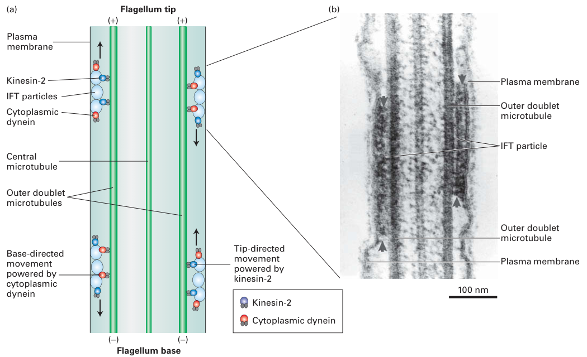
| Flagellum tip | 鞭毛尖端 |
| Flagellum base | 鞭毛基部 |
| Plasma membrane | 质膜 |
| Central microtubule | 中央微管 |
| Outer doublet microtubule | 外二联体微管 |
| IFT particle | IFT颗粒 |
| Kinesin-2 | 驱动蛋白2 |
| Cytoplasmic dynein | 胞质动力蛋白 |
| Tip-directed movement | 向尖端运动 |
| Base-directed movement | 向基部运动 |
初级纤毛是间期细胞上的感觉细胞器
许多脊椎动物细胞具有一根单独的不运动纤毛，称为初级纤毛。初级纤毛是一种稳定的结构，对秋水仙素等能使大多数微管解聚的药物有抗性；秋水仙素处理后，仅存的微管位于中心粒和初级纤毛中（见图18-12）。此外，初级纤毛中的微管蛋白高度乙酰化，因此使用能特异性识别乙酰化α-微管蛋白的抗体可轻易鉴定出每个间期细胞上唯一的初级纤毛（图18-35a）。
终末分化的细胞和处于间期的分裂细胞都含有初级纤毛。在后一种情况下，初级纤毛的存在与中心粒的复制周期相关联（在第18.6节讨论），其中较老的"母"中心粒作为组装初级纤毛的基体（图18-35b）。
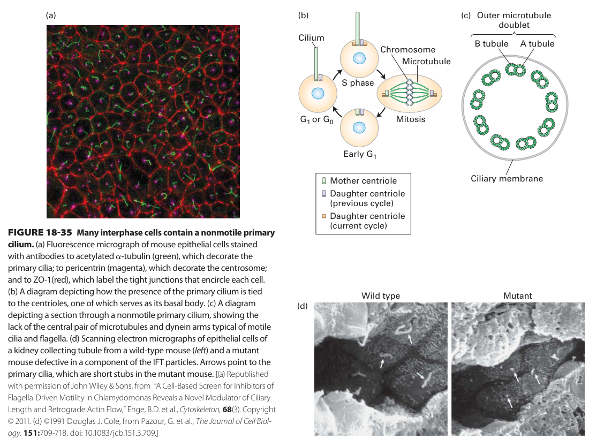
| Mother centriole | 母中心粒 |
| Daughter centriole (previous cycle) | 子中心粒（上一周期） |
| Daughter centriole (current cycle) | 子中心粒（当前周期） |
| Mitosis | 有丝分裂 |
| A tubule | A微管 |
| B tubule | B微管 |
| Ciliary membrane | 纤毛膜 |
| Chromosome | 染色体 |
| Outer microtubule doublet | 外二联体微管 |
| Cilium | 纤毛 |
| Wild type | 野生型 |
| Mutant | 突变体 |
| Early G1 | 早期G1 |
| S phase | S期 |
初级纤毛不能运动，因为它缺少其他纤毛和鞭毛中存在的中央对微管和动力蛋白臂（图18-35c）。最近的研究发现，初级纤毛其实是一种感觉细胞器，通过检测细胞外信号充当细胞的"天线"。例如，嗅觉源于鼻腔内嗅感觉神经元初级纤毛上的受体与气味分子的结合（见第22章）。另一个例子是，眼部的视杆细胞和视锥细胞具有一根初级纤毛，其尖端大幅扩展，以容纳参与光感受的蛋白质。视网膜蛋白视蛋白以每分钟约2000个分子的速率通过初级纤毛，由驱动蛋白2作为IFT系统的一部分运输。这种运输的缺陷会导致视网膜变性。
初级纤毛在其基部有扩散屏障，因此只有合适的蛋白质才能进入：10 kDa的球状蛋白可以顺利进入，但大于40 kDa的蛋白质则被排除在外。值得注意的是，通过这一屏障的运输与通过核孔进入细胞核的运输有相似之处，事实上这两种运输形式有一些共同的组分。回忆一下，通过核孔的输入需要Ran GTPase的梯度，并涉及货物蛋白与输入蛋白的结合（见第13.6节）。至少某些蛋白质（如驱动蛋白2）跨越基部进入初级纤毛的运输，同时需要Ran GTPase的梯度和输入蛋白。
初级纤毛缺陷是许多疾病的根源
多年来，初级纤毛的存在和功能一直被忽视。然而，在过去十年里，这种情况发生了巨大变化，因为人们认识到鞭毛内运输的缺陷会导致小鼠初级纤毛的丢失（图18-35d），并且发现一些疾病可追溯到初级纤毛和IFT的缺陷。最早的线索之一来自以下发现：衣藻IFT蛋白在哺乳动物中的同源物缺失会导致初级纤毛缺陷，并引起常染色体显性多囊肾病（ADPKD）。人们认为，肾集合管上皮细胞上的初级纤毛作为机械化学感受器，通过其弯曲程度来测定液体流动的速率。
另一个例子是，巴德-毕德综合征患者有视网膜变性、多指（源于希腊语"多指"）和肥胖。该综合征可由14个基因中任何一个的突变引起，并已被追溯到初级纤毛功能的缺陷。这些基因中有许多编码BBsome的亚基，BBsome是一种八聚体复合物，形成的衣被在结构元件上与COPI、COPII和网格蛋白有共同之处（见第14章），并将膜蛋白运输到纤毛。虽然BBsome许多组分的缺陷不影响初级纤毛自身的结构，但会导致正常情况下应通过BBsome与IFT装置相互作用而被递送到初级纤毛的特定膜受体缺失。例如，巴德-毕德综合征患者中出现的多指，是由于初级纤毛中局部Hedgehog信号（见第16章）的丧失，而该信号是胚胎发生过程中模式形成所必需的。■
- 纤毛和鞭毛是基于微管的细胞表面结构，具有特征性的中央对单体微管和九组外二联体微管（见图18-31）。
- 所有纤毛和鞭毛都从基体长出，基体是具有九组外三联体微管的结构，与中心粒密切相关。
- 附着在一个二联体微管A微管上的轴丝动力蛋白与另一个二联体的B微管相互作用，使纤毛和鞭毛弯曲。
- 纤毛和鞭毛具有一种机制——鞭毛内运输（IFT），其中物质由驱动蛋白2运送到尖端，再由胞质动力蛋白从尖端运回基部。IFT调控纤毛和鞭毛的功能与长度。
- 许多细胞表面有一根不运动的初级纤毛，它缺少可运动纤毛正常的中央对微管和动力蛋白臂。初级纤毛作为感觉细胞器发挥功能，其质膜上定位着细胞外信号的受体。由于其感觉功能，许多疾病源于受体定位或初级纤毛结构本身的缺陷。
18.6 有丝分裂
在一切允许生命存在并得以延续的过程中，也许最关键的是细胞在每次细胞分裂时准确复制并忠实地将其染色体分离的能力。在细胞周期——一个将在第19章讨论的高度调控过程——中，细胞在一个称为S期（DNA合成期）的时期精确地复制一次其染色体。染色体一旦被复制，就由称为黏连蛋白的蛋白质维系在一起。随后细胞经过一个称为G2（gap 2，间隙2）的时期，然后进入有丝分裂，即复制后的染色体被分配到子细胞的过程。这一过程必须非常精确——染色体的丢失或获得对细胞来说要么是致命的（这种情况下往往检测不到），要么会引起严重的后果。据估计，酵母每100,000次细胞分裂才发生一次16条染色体中的一条分离错误，这使有丝分裂成为生物学中最精确的过程之一。要达到这种精确性，该过程必须受到高度调控，从而以有序的一系列步骤进行而不出错。确保有丝分裂保真度的时间安排与机制，受细胞周期调控回路的严密调节，我们将在第19章详细讨论这一回路。在此，我们只在涉及微管和有丝分裂力学的范围内讨论这一回路。
中心体在细胞周期早期复制，为有丝分裂做准备
为了在有丝分裂期间分离染色体，细胞会以与S期染色体复制相协调的方式复制它们的MTOC——即中心体（图18-36）。正如我们在第19章所讨论的，细胞周期在很大程度上是由细胞周期特异性的细胞周期蛋白与细胞周期蛋白依赖性激酶（CDK）的结合所驱动的。两种激酶——G1/S期CDK和另一种称为Plk4的激酶——促进中心体复制。随着细胞进入有丝分裂，复制后的中心体彼此分开，这一过程称为中心体分离，随后它们成核组装微管，成为有丝分裂纺锤体的两个极。动物细胞中中心体的数目必须受到非常严密的控制。事实上，许多肿瘤细胞的中心体多于两个，这会导致染色体分离错误所引发的遗传不稳定性，进而造成非整倍性（染色体数目不等）。非整倍性为何会导致癌症，将在第24章详细讨论。
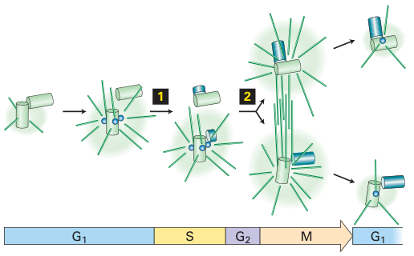
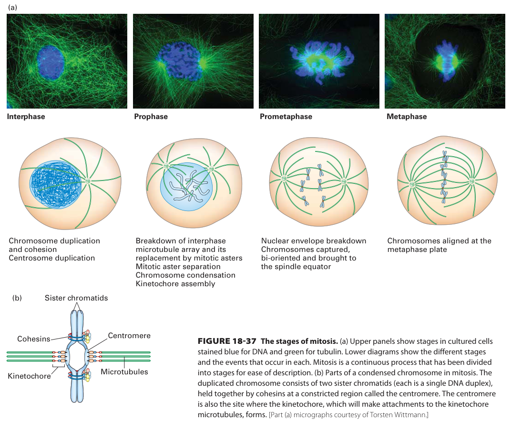
| Interphase | 间期 |
| Prophase | 前期 |
| Prometaphase | 前中期 |
| Metaphase | 中期 |
| Chromosome duplication and cohesion | 染色体复制与黏连 |
| Centrosome duplication | 中心体复制 |
| Mitotic aster separation | 有丝分裂星体分离 |
| Chromosome condensation | 染色体凝集 |
| Kinetochore assembly | 动粒组装 |
| Nuclear envelope breakdown | 核膜破裂 |
| Chromosomes aligned at the metaphase plate | 染色体在中期板上排列成行 |
| Centromere | 着丝粒 |
| Sister chromatids | 姐妹染色单体 |
| Kinetochore | 动粒 |
| Cohesins | 黏连蛋白 |
| Microtubules | 微管 |
当细胞进入有丝分裂时，两个MTOC的活性——即成核微管的能力——随着它们积累更多的中心体周围物质而大大增加。由于从这两个MTOC辐射出的微管组装体此时形似星芒，它们常被称为有丝分裂星体。
有丝分裂可分为六个时期
为了便于描述，有丝分裂被划分为若干时期（图18-37a），但实际上它是一个连续的过程。下面我们回顾每个时期的主要事件。
有丝分裂的第一个时期称为前期，它以一系列协调而剧烈的事件为标志。首先，随着复制后的中心体在微管成核方面变得更加活跃，间期的微管阵列被取代。这种活性为动态微管提供了两个组装位点，形成有丝分裂星体。此外，由于(+)端的+TIP活性发生变化，正在生长的微管自身的动态也增强了。随后，双极驱动蛋白5马达（见图18-20）把两个星体推向细胞核的相对两侧，这些马达把相互交织的微管推开。分开的中心体将成为有丝分裂纺锤体的两个极，这个基于微管的结构负责分离染色体。其次，蛋白质合成从依赖mRNA 5′帽转变为不依赖mRNA 5′帽（见5.4节），而通常依赖间期微管阵列的细胞内膜系统发生解体。此外，内吞和外排作用停止，微丝总体上被重排，使细胞变圆。在细胞核中，核仁解体，染色体开始凝集。维系每对已复制染色体的黏连蛋白——在此时期这些染色体称为姐妹染色单体——被降解，但在着丝粒区域除外，在那里两条姐妹染色单体仍由完整的黏连蛋白连接（图18-37b）。同样在前期，称为动粒的特化结构在每个姐妹染色单体的着丝粒区域组装，它们将成为微管附着的位点。正如第19章更详细讨论的，所有这些事件都由有丝分裂细胞周期蛋白-CDK复合物活性的迅速升高来协调，该复合物是一种激酶，通过磷酸化多种蛋白质来驱动细胞周期进程。
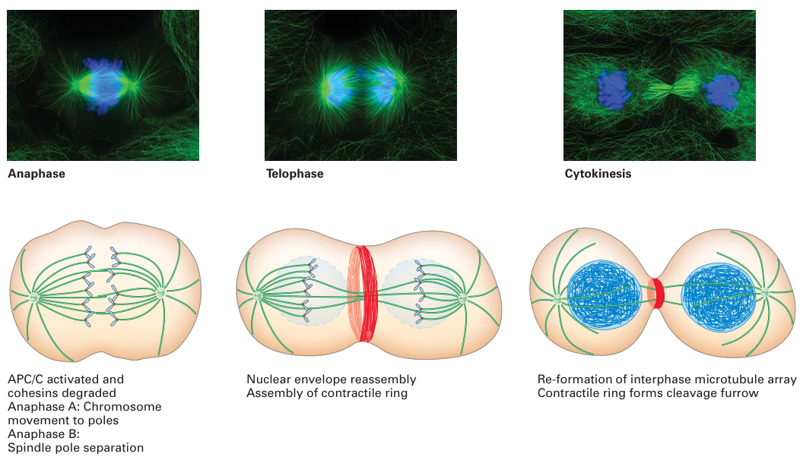
有丝分裂的下一个时期是前中期，它由核膜破裂并回缩到内质网中、核孔解体以及基于核纤层蛋白的核纤层解体所启动。从纺锤体极组装出的微管寻找并通过与动粒结合来"捕获"染色体对。每条染色单体都有一个动粒，因此一对姐妹染色单体有两个动粒；在前中期，每一个动粒都通过微管附着到不同的纺锤体极，这一关键过程我们将在下文详细讨论。随后染色体对排列在两个纺锤体极之间等距的一点上。前中期一直持续到所有染色体都完成排列，此时细胞进入下一个时期——中期。
当细胞检测到所有染色体都已正确附着到纺锤体上时，下一个时期——后期——由后期促进复合物或称细胞周期体（APC/C）的激活所诱导（第19章讨论）。被激活的APC/C（经过若干中间步骤）最终导致那些把姐妹染色单体维系在一起的黏连蛋白被破坏，于是每条染色单体都能被附着在其动粒上的微管拉向各自的极。这种运动称为后期A。同时还发生一种独立而不同的运动：纺锤体两极进一步分开，这一过程称为后期B。染色体既已分离，细胞便进入末期，此时核膜重新形成，染色体解凝集，细胞在胞质分裂期间由收缩环掐成两个子细胞。
有丝分裂纺锤体含有三类微管
在我们讨论有丝分裂这一非凡过程所涉及的机制之前，重要的是先了解从纺锤体极发出的三类不同的微管——纺锤体极是它们(−)端所嵌入的位置。星体微管从纺锤体极延伸到细胞皮层（图18-38）。通过与皮层相互作用，星体微管执行把纺锤体定向到细胞分裂轴这一关键功能。动粒微管通过一种搜寻与捕获机制发挥作用，把纺锤体极与姐妹染色单体对上的动粒连接起来。在后期A期间，动粒微管把新分离的染色体运送到各自的极。极微管从每个纺锤体极伸向对侧极，并以反平行方式相互作用。这些微管最初负责在前期把复制后的中心体推开，随后负责维持纺锤体的结构，再后来负责在后期B把纺锤体两极推开。
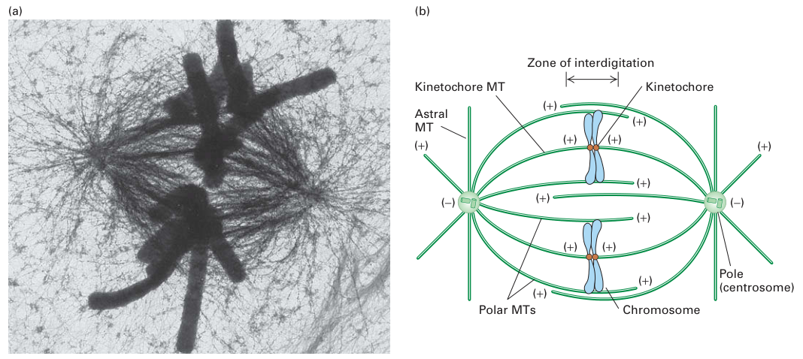
| Kinetochore MT | 动粒微管 |
| Zone of interdigitation | 交错区 |
| Chromosome | 染色体 |
| Polar MTs | 极微管 |
| Kinetochore | 动粒 |
| Astral MT | 星体微管 |
| Pole (centrosome) | 极（中心体） |
注意，对称纺锤体每一半中的所有微管取向都相同，只有某些极微管例外——它们延伸越过中点，并与来自对侧极的极微管相互交错。
有丝分裂中微管的动态性急剧增加
虽然我们绘制的是有丝分裂各时期的静态图像，但有丝分裂所有时期的微管都是高度动态的。正如我们所见，当细胞进入有丝分裂时，其中心体成核组装微管的能力显著增强（见图18-36）。此外，微管变得动态得多。这是如何确定的呢？原则上，人们可以用荧光标签标记微管并观察它们各自的行为，但实际上，有丝分裂纺锤体中的微管太多，无法逐一追踪。要获得这些微管动态不稳定性的平均值，研究者可以把荧光标记的微管蛋白导入细胞，它会随机地掺入所有微管。然后他们可以漂白有丝分裂纺锤体一个小区域内的荧光标记，并用一种称为光漂白后荧光恢复（FRAP）的技术测量荧光恢复的速率（见图4-23）。由于荧光的恢复源于可溶性荧光微管蛋白二聚体组装成新微管，其速率代表了微管周转的平均速率。在有丝分裂纺锤体中，微管的半衰期约为15秒，而在间期细胞中约为5分钟。应当指出，这些是整体测量值，而单个微管可能更稳定或更动态，这一点我们将会看到。
是什么使微管在有丝分裂中变得更动态？正如我们前面所讨论的，动态不稳定性是生长速率、缩短速率、灾变和救援相对贡献的一种度量（见图18-9）。体内微管动态分析表明，有丝分裂中单个微管不稳定性的增强主要由灾变增加和救援减少所产生，而生长（即延长）或缩短速率变化很小。用蛙卵提取物进行的研究提示，在间期和分裂期提取物中增强灾变的主要因素都是驱动蛋白13对微管的解聚。这可以在一个体外实验中看到，在该实验中微管的组装由纯化的中心体从纯微管蛋白开始成核（图18-39a）。如果向该实验体系中加入驱动蛋白13，形成的微管就少得多。然而，如果把能增强(+)端组装的蛋白XMAP215与驱动蛋白13一起加入，就会由于灾变频率的急剧降低而形成大量微管。结果表明，驱动蛋白13的活性在细胞周期中并没有显著变化，而XMAP215的活性在有丝分裂期间被其磷酸化所抑制（图18-39b）。这导致细胞进入有丝分裂时微管变得远为不稳定（更动态）（图18-39c）。
有丝分裂星体由驱动蛋白5推开、由动力蛋白定向
当两个有丝分裂星体形成时，它们之间生成极性相反、相互交错的微管。在前期，双极驱动蛋白5与反平行微管相互作用，并通过朝每条微管的(+)端移动而把它们滑开，从而把两个星体推开。(−)端导向的马达——胞质动力蛋白——也能促进星体分离，并使纺锤体在细胞中正确定向。动力蛋白通过与细胞皮层结合并牵拉由有丝分裂星体成核的微管来实现这一点。正如我们马上要讨论的，同样的机制被用来在后期B期间延长纺锤体（见下文图18-43）。
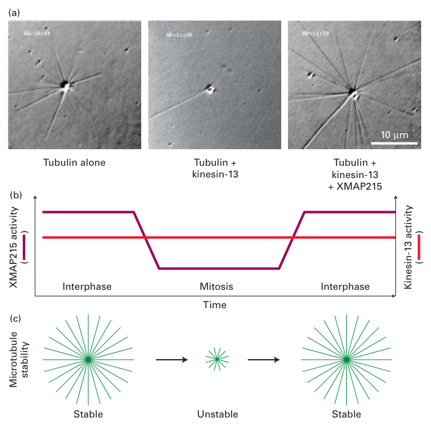
| Tubulin alone | 纯微管蛋白 |
| Tubulin + kinesin-13 | 微管蛋白+驱动蛋白13 |
| Tubulin + kinesin-13 + XMAP215 | 微管蛋白+驱动蛋白13+XMAP215 |
| Kinesin-13 | 驱动蛋白13 |
| Interphase | 间期 |
| Mitosis | 有丝分裂 |
| Kinesin-13 activity | 驱动蛋白13活性 |
| XMAP215 activity | XMAP215活性 |
| Time | 时间 |
| Microtubule stability | 微管稳定性 |
| Stable | 稳定 |
| Unstable | 不稳定 |
染色体在前中期被捕获并定向
动粒是介导染色体与微管之间附着的结构，它在每条姐妹染色单体上一个称为着丝粒的区域组装。着丝粒是凝集染色体上一个由着丝粒DNA序列所界定的缩窄区域。着丝粒DNA的大小差异极大；在芽殖酵母中约为125 bp，而在人类中约为1 Mb（见第8章）。动粒含有许多蛋白质复合物，以促进着丝粒DNA与微管之间的连接。在动物细胞中，动粒由一层着丝粒DNA层以及内动粒层和外动粒层组成，动粒微管的(+)端终止于外动粒层（图18-40）。酵母的动粒由单条微管连接到其纺锤体极，人类的动粒由约30条微管连接，而植物染色体则由数百条微管连接。
前中期动粒是如何附着到微管上的呢？从纺锤体极成核的微管非常动态，当它们接触到动粒时，无论是侧面还是末端接触，这种接触都能导致染色体附着（图18-41a，步骤1a和1b）。"捕获"动粒的微管通过降低灾变速率而被选择性地稳定下来，这增加了这种附着得以持续的机会。
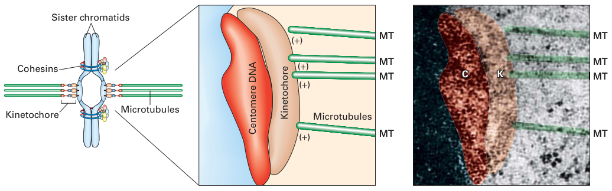
| Kinetochore | 动粒 |
| Centromere DNA | 着丝粒DNA |
| Sister chromatids | 姐妹染色单体 |
| Cohesins | 黏连蛋白 |
| Microtubules | 微管 |
最近的研究发现了一种涉及小GTP酶Ran的机制，它提高了微管遇到动粒的机会。回忆第13章的内容：在间期，Ran GTP酶循环参与蛋白质通过核孔进出细胞核的运输（见图13-37）。在有丝分裂期间，当核膜和核孔已经解体时，Ran GTP酶的一种鸟嘌呤核苷酸交换因子结合在染色体上，从而在染色体附近产生较高的局部Ran∙GTP浓度。由于刺激Ran上GTP水解的酶——Ran GAP——在胞质溶胶中均匀分布，这就产生了一个以染色体为中心的Ran∙GTP梯度。Ran∙GTP诱导胞质溶胶中的微管稳定因子与微管结合，导致微管生长增强，从而把由纺锤体极成核的微管的生长偏向染色体方向。
一旦动粒以侧面或末端方式附着到一条微管上，动力蛋白-动力蛋白激活蛋白（dynactin）就与动粒结合，把复制后的染色体沿微管移向纺锤体极。这种移动最终导致微管以末端方式附着到一个动粒上（图18-41a，步骤2）。这种移动有助于使姐妹染色单体定向，使对侧未被占据的动粒指向较远的纺锤体极。最终来自远侧极的一条微管将捕获这个游离的动粒；此时这对姐妹染色单体据说是双向定向的（图18-41a，步骤3）。两个动粒附着到相对的极上后，复制后的染色体便处于张力之下，被两组动粒微管朝两个方向牵拉。当一条或少数几条染色体实现双向定向后，其他染色体利用这些已存在的动粒微管来帮助自身定向并移向纺锤体中央。这种定向由驱动蛋白7（又称CENP-E）介导，它与游离的动粒结合，把染色体移动到动粒微管的(+)端（图18-41a，步骤4）。
复制后的染色体由马达和微管动态排列成行
在前中期，染色体来到两个纺锤体极之间的中点处，这个位置称为中期板，这一过程称为染色体集合。在此过程中，双向定向的染色体对常常在到达中期板之前来回振荡。染色体集合涉及若干基于微管的马达与微管组装和解聚调控因子的协同活动（图18-41b）。这些调控因子定位在动粒上，但它们如何被维持在那里尚不清楚——它们并不是下一节所述稳定动粒复合物的组成部分。染色体的振荡行为涉及附着在一个动粒上的微管延长、附着在另一个动粒上的微管缩短，而全程都不丢失它们的附着。在后生动物中，若干与动粒结合的基于微管的马达参与这一过程。首先，动力蛋白-动力蛋白激活蛋白提供把染色体对拉向较远极的最强拉力。这种移动需要微管同时缩短，而微管的缩短由定位于动粒的驱动蛋白13增强。当染色体移动时，与另一个动粒相连的微管必须生长。锚定在这个动粒上的是驱动蛋白相关马达驱动蛋白7，它抓住正在延长的微管的生长中的(+)端。还有一种驱动蛋白——染色体驱动蛋白/驱动蛋白4——也与染色体臂结合，参与集合过程。驱动蛋白4是一种(+)端导向的马达，它与极微管相互作用，把染色体拉向纺锤体中央。当染色体已集合到中期板上时，动力蛋白-动力蛋白激活蛋白从动粒上释放下来，并沿动粒微管流向两极。这些不同的活动和相反的力共同作用，把所有染色体带到中期板上，此时细胞已为后期做好了准备。
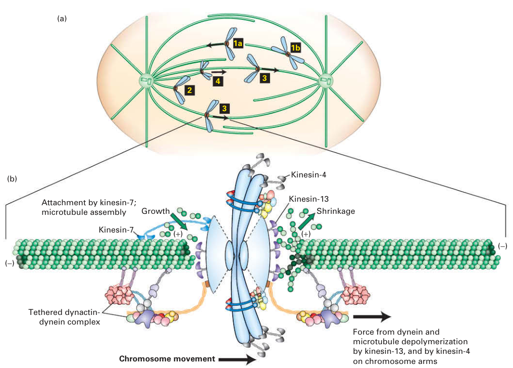
| Shrinkage | 缩短 |
| Growth | 生长 |
| Chromosome movement | 染色体运动 |
| Kinesin-7 | 驱动蛋白7 |
| Kinesin-4 | 驱动蛋白4 |
| Kinesin-13 | 驱动蛋白13 |
| Tethered dynactin-dynein complex | 系连的动力蛋白激活蛋白-动力蛋白复合物 |
| Attachment by kinesin-7 | 驱动蛋白7介导的附着 |
| Microtubule assembly | 微管组装 |
染色体乘客复合物调控动粒处的微管附着
我们已经指出，有丝分裂中染色体的分离必须非常准确，因此在后期开始之前所有染色体都实现双向定向是至关重要的。在随机的动粒-微管附着过程中，有可能出现错误；例如，一对姐妹染色单体的两个动粒可能都附着到来自同一个纺锤体极的微管上。如果这样的附着在中期持续存在，就会导致一个细胞缺失一条染色体而另一个细胞多出一条染色体，这要么是致命的，要么是非常有害的。细胞有两种重要机制来确保所有染色体在后期开始前都正确地实现双向定向。
第一种机制确保在双向定向发生之前，动粒-微管相互作用是弱的。当一条染色体正确实现双向定向时，染色体上会横跨产生张力，而这种张力使动粒-微管附着变得稳定。
要理解这是如何起作用的，我们需要更仔细地考察把动粒连接到微管上的分子组分。正如第8章所讨论的，动粒组装在由一种称为CENP-A的着丝粒特异性H3组蛋白变体所标记的染色体DNA区域上。这种变体标记了动粒组装的位点，而这是一个非常复杂的过程。在酵母中，已证明有约半打不同的稳定蛋白质复合物（由40多种不同的蛋白质组成）与这个着丝粒区域结合。这些蛋白质复合物基本上在人类中都是保守的，考虑到动粒的根本重要性，这并不令人惊讶。其中之一，即所谓的Ndc80复合物，细长而柔韧，它的许多拷贝以一种套筒状的排列把内动粒与微管的(+)端连接起来（图18-42a）。Ndc80以及动粒处许多相关因子的功能受染色体乘客复合物（CPC）的调控。该复合物在有丝分裂早期与内动粒结合，其组分中包括一种称为Aurora B的蛋白激酶。一旦CPC与动粒结合，Aurora B就能磷酸化附近区域的若干组分，包括Ndc80复合物，从而松弛Ndc80与微管的附着。然而，这些组分的磷酸化并不稳定：另一种与外动粒结合的蛋白质——磷酸酶PP1——可以使它们去磷酸化。因此，当一对姐妹染色单体上的动粒不处于张力下时，Ndc80会被Aurora B持续磷酸化、又被PP1去磷酸化。结果是动粒与微管之间只有弱的相互作用。然而，当双向定向发生时，产生的张力牵拉两个动粒并使柔韧的Ndc80复合物伸展，从而增大内动粒与外动粒之间的间距（图18-42b, c）。由于这些运动，Ndc80不能被Aurora B磷酸化，而Ndc80的去磷酸化状态使它更牢固地附着到微管上。通过这种方式，双向定向染色体上的微管附着被选择性地稳定下来。
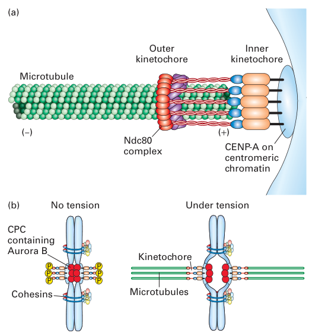
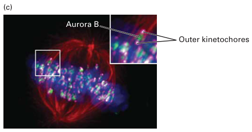
| Microtubules | 微管 |
| Cohesins | 黏连蛋白 |
| CPC containing Aurora B | 含Aurora B的CPC |
| Aurora B | Aurora B |
| Kinetochore | 动粒 |
| No tension | 无张力 |
| Under tension | 有张力 |
| Ndc80 complex | Ndc80复合物 |
| Inner kinetochore | 内动粒 |
| Outer kinetochore | 外动粒 |
| Microtubule | 微管 |
| CENP-A on centromeric chromatin | 着丝粒染色质上的CENP-A |
虽然CPC对每条染色体的双向定向很重要，但它并不确保所有染色体在后期开始前都实现双向定向。确保染色单体正确分离的第二种机制是纺锤体组装检查点通路，这是一条阻止细胞周期推进到后期的信号通路，直到所有动粒上都存在张力。即使只有一个未附着或附着不正确的动粒，也能激活纺锤体组装检查点通路并使细胞周期暂停，直到错误被纠正。这一机制将在第19章详细讨论，它保证所有染色体在细胞进入后期之前都正确地实现双向定向。
后期A通过微管缩短把染色体移向两极
后期A的开始是光学显微镜下能观察到的最剧烈的运动之一。当纺锤体组装检查点被通过后，APC/C的激活诱导把姐妹染色单体维系在一起的剩余黏连蛋白发生蛋白酶解。突然之间，配对的姐妹染色单体彼此分开并被拉向各自的极。这一运动之所以突然，是因为动粒微管处于张力之下，而一旦染色单体之间的黏连蛋白附着被去除，分开的染色单体就可以自由移动。
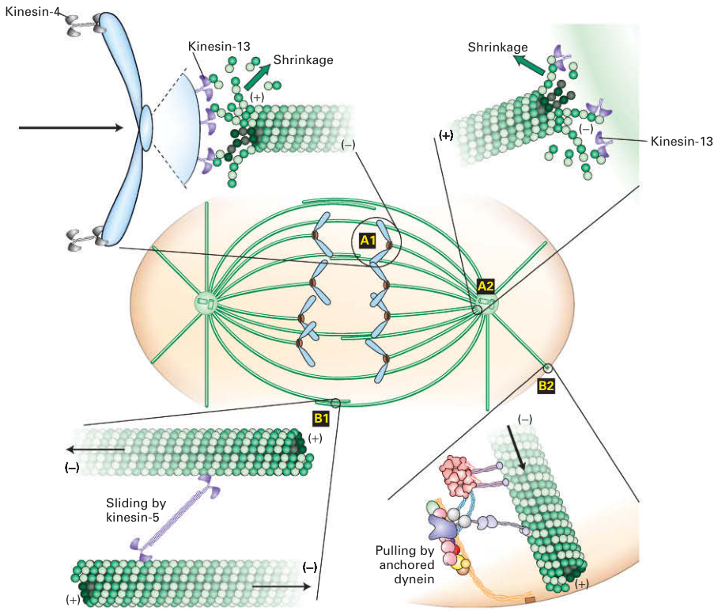
| Shrinkage | 缩短 |
| Sliding by kinesin-5 | 驱动蛋白5的滑动 |
| Pulling by anchored dynein | 锚定动力蛋白的牵拉 |
| Kinesin-4 | 驱动蛋白4 |
| Kinesin-13 | 驱动蛋白13 |
用分离的中期染色体进行的实验表明，后期A的运动可以由微管缩短提供动力，其能量来自微管末端GTP结合的微管蛋白亚基被移除时所释放的储存结构应变。这一机制可以在体外很好地演示。当中期染色体被加入到纯化的微管中时，它们优先结合到微管的(+)端。稀释混合物以降低游离微管蛋白二聚体的浓度，会由于染色体所结合的(+)端处微管解聚而导致染色体向(−)端移动。此外，最近的实验表明，在果蝇中，微管解聚驱动蛋白13蛋白家族的两个成员（见图18-15）也参与后期A的染色体运动。其中一个驱动蛋白13定位于动粒并增强该处的解聚（图18-43，A1），另一个定位于纺锤体极，增强该处的解聚（图18-43，A2）。因此，至少在果蝇中，后期A部分由特异性地定位于动粒和纺锤体极的驱动蛋白13提供动力，在动粒微管的(+)端和(−)端同时使其缩短，把染色体拉向两极。
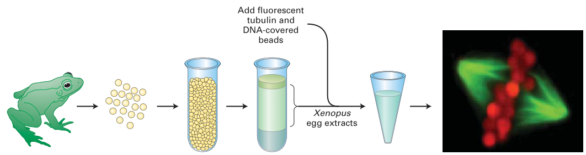
| Add fluorescent tubulin and DNA-covered beads | 加入荧光微管蛋白和DNA覆盖的微珠 |
| Xenopus egg extracts | 爪蟾卵提取物 |
后期B通过驱动蛋白和动力蛋白的共同作用把两极分开
后期的第二部分涉及纺锤体两极的分开，这一过程称为后期B。这一运动的一个主要贡献者是双极驱动蛋白5蛋白的参与（图18-43，B1）。这些马达与相互重叠的极微管结合，由于它们是(+)端导向的马达，因此把两极推开。在此过程中，极微管必须生长，以适应纺锤体两极之间增大的距离。另一个马达——微管(−)端导向的胞质动力蛋白，定位于并锚定在细胞皮层上——牵拉星体微管，从而帮助分开纺锤体两极（图18-43，B2）。
还有额外的机制参与纺锤体的形成
在体内有许多情况是纺锤体在缺乏中心体时形成的，包括植物细胞的有丝分裂和雌性动物的减数分裂。这一观察意味着，从中心体成核微管并不是纺锤体形成的唯一方式。利用蛙卵有丝分裂提取物——不含中心体的提取物——的研究表明，加入覆盖有DNA的微珠就足以组装出一个相对正常的有丝分裂纺锤体（图18-44）。在这个体系中，微珠诱导微管的组装，而提取物中的各种因子协同作用形成纺锤体。这一反应所必需的因子之一是胞质动力蛋白，据推测它结合两条微管并迁移到它们的(−)端，从而把它们拉在一起。
正如18.1节所提到的，一个新发现的与γ-TuRC相关的复合物——augmin复合物——也向有丝分裂纺锤体提供微管。在前中期晚期和中期，augmin复合物结合到已存在的纺锤体微管的侧面，成核组装出与母微管极性相同的额外微管。这种活性既增加了纺锤体中极微管的丰度，也增加了动粒微管的丰度。
最近的研究提出了一个关于纺锤体如何在缺乏中心体时形成的模型。覆盖有DNA的微珠诱导微管组装的能力依赖于Ran，即那种在间期细胞中驱动核输入和核输出的小GTP酶（见13.6节）。回忆一下，要被输入细胞核的蛋白质会与一种称为输入蛋白（importin）的核输入受体结合，这导致该复合物从胞质溶胶穿过核孔进入核质。细胞核中Ran∙GTP的水平很高，因为其激活因子——Ran的鸟嘌呤核苷酸交换因子（Ran-GEF）——通过结合染色质而定位于那里。Ran∙GTP与输入蛋白结合，改变其构象以释放被运输的蛋白质，随后输入蛋白-Ran∙GTP复合物离开细胞核，经核孔返回胞质溶胶。在有丝分裂中核膜破裂之后，由于Ran-GEF与染色质结合，染色体周围存在一个Ran∙GTP梯度。这种Ran∙GTP从输入蛋白上释放一种称为TPX的蛋白质。TPX结合augmin复合物和γ-TuRC，驱动染色质附近微管的组装，这些微管可用于构建纺锤体。在含有中心体的纺锤体中，这条通路也存在，用于增加动粒微管和极微管的数目。它涉及TPX–augmin–γ-TuRC复合物与一条已存在微管的侧面结合，以与母微管成小角度的方向成核组装新微管，从而增加具有相同极性的微管的密度。
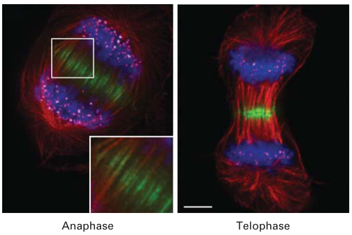
| Anaphase | 后期 |
| Telophase | 末期 |
胞质分裂把复制后的细胞一分为二
在动物细胞的后期晚期和末期，细胞组装一个基于微丝的收缩环，附着到质膜上，该环最终会收缩并把细胞掐成两个，这一过程称为胞质分裂（见图18-37）。收缩环是一条由极性混合的肌动蛋白丝构成的薄带，其间散布着肌球蛋白II双极丝（见图17-35）。在接收到信号后，该环收缩，首先产生卵裂沟，然后使细胞掐成两个。
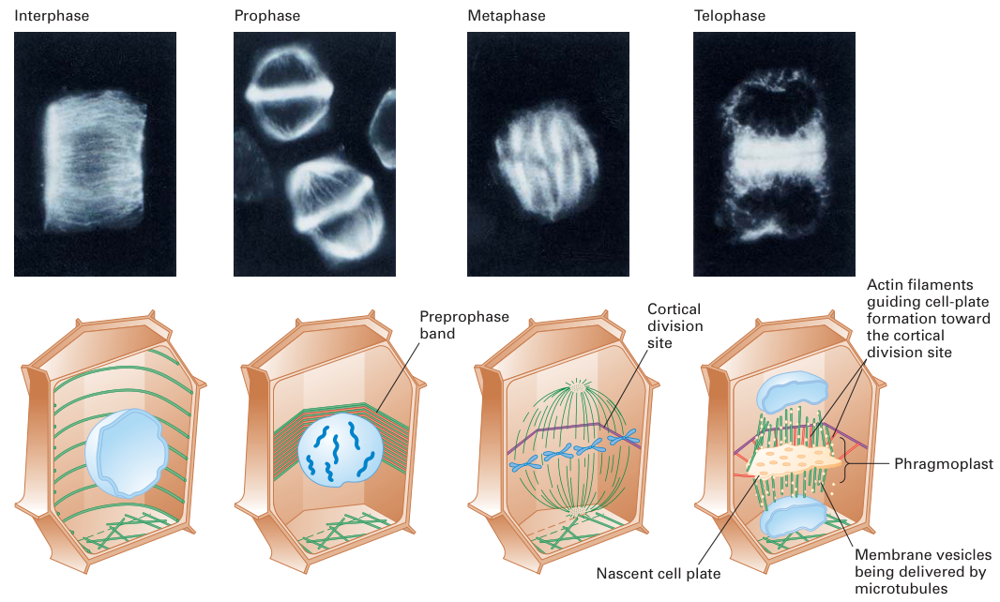
| Interphase | 间期 |
| Prophase | 前期 |
| Metaphase | 中期 |
| Telophase | 末期 |
| Preprophase band | 前期前带 |
| Phragmoplast | 成膜体 |
| Actin filaments | 肌动蛋白丝 |
| Membrane vesicles | 膜囊泡 |
| Nascent cell plate | 初生细胞板 |
| Cortical division site | 皮层分裂位点 |
| Microtubules | 微管 |
收缩环有两个方面对其功能至关重要。第一，它必须被放置在细胞中适当的位置。现已知道，这一位置由纺锤体提供的一个信号所决定，使该环形成于两个纺锤体极之间的等距处。这一信号至少部分由染色体乘客复合物（CPC）提供，CPC在前中期调控微管与动粒的附着（见图18-42b）。直到后期为止，CPC都与尚未分开的染色单体的内动粒结合。当后期开始时，它离开着丝粒，与纺锤体中央相互重叠的极微管结合（图18-45）。在那里，CPC招募另一个蛋白质复合物——中心纺锤体蛋白（centralspindlin），其中包含一种(+)端导向的驱动蛋白马达，该马达凭借其马达活性而集中到纺锤体的中部。随着后期B继续，中心纺锤体蛋白招募RhoA的一种鸟嘌呤核苷酸交换因子。回忆第17章的内容：Rho蛋白是小GTP结合蛋白，它们被交换因子激活以催化GDP与GTP的交换（见图17-41）。一旦被激活，RhoA∙GTP就激活一种形成蛋白（formin），驱动构成收缩环的肌动蛋白丝的成核与组装（见图17-43）。这样，纺锤体的位置就直接决定了收缩环形成的位置，从而也决定了胞质分裂的位置。
收缩环的第二个重要方面是其收缩的时机：如果它在所有染色体都移向各自的极之前就收缩，将会导致灾难性的遗传后果。正如我们将在第19章讨论的，在芽殖酵母中发现了一条称为纺锤体位置检查点的信号通路，它使细胞周期暂停，以确保在纺锤体正确定向之前不发生胞质分裂。动物细胞中这种协调的机制仍在研究之中。
植物细胞在有丝分裂中重组其微管并构建新的细胞壁
间期的植物细胞缺乏那种把微管组织成动物细胞典型辐射状阵列的中央MTOC。取而代之的是，许多含有γ-微管蛋白的MTOC排列在植物细胞的皮层中，并在细胞壁下方成核组装横向的微管带（图18-46，左）。这些极性混合的微管在一种微管切断蛋白——剑蛋白（katanin）——的作用下从皮层MTOC上释放出来；剑蛋白缺失会产生很长的微管和形状异常的细胞。其原因是，这些由植物特异性MAP交联的皮层微管有助于铺设细胞外的纤维素微纤丝，即刚性细胞壁的主要成分（见图20-40）。
虽然植物细胞中有丝分裂的事件总体上与动物细胞相似，但纺锤体的形成和胞质分裂在植物中有其独特之处（见图18-46）。植物细胞把其皮层微管和肌动蛋白丝捆扎成前期前带，并在前期不用中心体帮助就把它们重组为纺锤体。前期前带的位置界定了后来的皮层分裂位点。在中期，植物细胞和动物细胞的有丝分裂器看起来非常相似。由于植物有细胞壁，细胞一分为二的方式与动物细胞相当不同，需要在两个子细胞之间组装一堵新壁。在末期出现的高尔基体来源的囊泡沿微管运输，形成初生的细胞板。细胞板扩展，并由肌动蛋白丝引导到分裂位点，形成成膜体——一种取代动物细胞收缩环的膜结构。构成成膜体的囊泡的膜成为两个子细胞的质膜。这些囊泡的内容物，如纤维素和果胶的多糖前体，形成早期的细胞板，并发育成两个子细胞之间的新细胞壁。■
- 有丝分裂——将复制后的染色体准确分离——涉及一台由动态微管和微管相关马达组成的分子机器。
- 有丝分裂纺锤体有三类微管，全部从纺锤体极发出：动粒微管附着于染色体；极微管从每个纺锤体极伸出并在纺锤体中部相互重叠；星体微管延伸到细胞皮层（见图18-38）。
- 在有丝分裂的第一个时期——前期，核内染色体凝集，纺锤体两极移到细胞核的两侧（见图18-37）。
- 在前中期，核膜破裂，从纺锤体极发出的微管在姐妹染色单体对的动粒处将其捕获。两个动粒（每条染色单体上一个）附着到相对的纺锤体极上（双向定向），这使染色体得以集合到纺锤体的中部。
- 与内动粒结合的染色体乘客复合物（CPC）通过其激酶组分Aurora B的活性使微管附着保持较弱，Aurora B会磷酸化关键的动粒蛋白。当一条染色体实现双向定向时，便产生张力，Aurora B的底物被拉离该激酶（见图18-42）。没有Aurora B对动粒蛋白的磷酸化，染色体-动粒附着就变得稳定。
- 在中期，染色体排列在中期板上。纺锤体组装检查点通路监测未附着的动粒，并把后期推迟到所有染色体都附着为止。
- 在后期，复制后的染色体被分开，并通过动粒微管在动粒处和纺锤体极处的缩短而被移向纺锤体极（后期A）。纺锤体两极也彼此分开，由朝极微管(+)端移动的双极驱动蛋白5推动（后期B）。纺锤体的分开还因位于皮层、牵拉星体微管的动力蛋白而得到促进（见图18-43）。
- 由于有丝分裂纺锤体在缺乏中心体时具有自组装能力，还有额外的机制参与有丝分裂纺锤体的组装。
- 基于肌动蛋白-肌球蛋白的收缩环，其位置由纺锤体的位置决定，在胞质分裂期间收缩，把细胞掐成两个。
- 在植物中，细胞分裂涉及由微管递送膜以组装成膜体，成膜体成为两个子细胞的质膜。
18.7 中间丝
真核生物的第三大丝状系统由中间丝（IF）构成。这一名称反映了它们约10 nm的直径，介于微丝6–8 nm的直径与骨骼肌肌球蛋白粗丝之间。中间丝既遍布于细胞质中，也衬贴于分裂间期动物细胞的核膜内面（图18-47）。中间丝具有若干独特的性质，使它们有别于微丝和微管。第一，它们在生化上异质性大得多——也就是说，存在许多不同但在进化上相关的IF亚基——并且常常以依赖组织的方式表达。第二，它们具有很高的抗张强度，头发和指甲就清楚地证明了这一点，它们主要由死细胞的中间丝构成。第三，与微丝和微管不同，它们没有内在的极性，其组成亚基也不结合核苷酸。第四，由于它们没有内在极性，因此不存在已知的、以它们为轨道的马达，也就不足为奇。第五，尽管就亚基交换而言它们是动态的，但它们仍然远比微丝和微管稳定，因为交换速率慢得多。事实上，纯化中间丝的一种标准做法是把细胞置于去垢剂中的剧烈抽提条件下，使所有膜、微丝和微管都被溶解，留下的残余物几乎全是中间丝。最后，中间丝并非存在于所有真核生物中。真菌和植物没有中间丝，昆虫则只有一类，由表达核纤层蛋白A/C和B的两个基因代表。
这些性质使中间丝成为后生动物独特而重要的结构。数以百计的临床疾病与编码IF蛋白的基因突变相关（其中一些将在本节讨论），这凸显了它们的重要性。为了理解它们对细胞和组织结构的贡献，我们先考察IF蛋白的结构，看它们如何组装成丝。接下来讨论它们的动态变化，然后描述中间丝的不同类别及其所执行的功能。
中间丝由亚基二聚体组装而成
在人类基因组中，中间丝由至少五个亚家族中的70个不同基因编码。IF蛋白的决定性特征是具有一个约310个残基的保守α-螺旋杆状结构域，它具有卷曲螺旋基序的序列特征（见图3-9a）。
中间丝的基本构建单元是一个通过杆状结构域结合在一起的二聚体，这些结构域以卷曲螺旋方式缔合（图18-48a）。这些二聚体随后以错位的方式缔合形成四聚体，其中两个二聚体的取向相反（图18-48b）。四聚体首尾相连地组装并互锁成长的原丝。四条原丝缔合成一根原纤维，四根原纤维并排缔合生成10 nm的丝。因此一根中间丝中有16条原丝（图18-48c）。每个二聚体的杆状结构域两侧是大小不同的非螺旋N端和C端结构域，这是各IF类别的特征（图18-48d）。由于四聚体是对称的，中间丝没有极性。对丝的这种描述基于其结构而非其组装机制：目前尚不清楚中间丝在体内是如何组装的。与微丝和微管不同，目前没有已知的中间丝成核、隔离、加帽或切丝蛋白。
中间丝是动态的
尽管中间丝比微管和微丝稳定得多，但已证明IF蛋白亚基与现有的IF细胞骨架处于动态平衡之中。在一项实验中，生物素标记的角蛋白被注射到成纤维细胞中；2小时内，标记蛋白就已经掺入到原本已存在的角蛋白细胞骨架中（图18-49）。这项实验和其他实验的结果表明，可溶池中的IF亚基能够自行添加到预先存在的丝上，而且亚基能够从完整的丝上解离下来。
| Protofilament | 原丝 |
| Protofibril | 原纤维 |
| Tetramer | 四聚体 |
| Head | 头部 |
| Rod | 杆状区 |
| Tail | 尾部 |
| N-terminus | N端 |
| C-terminus | C端 |
| Vimentin | 波形蛋白 |
| Lamin A | 核纤层蛋白A |
| Ig-like fold | 免疫球蛋白样折叠 |
| Nuclear localization sequence | 核定位序列 |
细胞质中间丝蛋白以组织特异性方式表达
对IF蛋白的序列分析显示，它们分为五个不同的同源类别，其中四类定位于细胞质。这些IF类别与表达该IF蛋白的细胞类型的发育起源有很强的对应关系（表18-1）。第五类——核纤层蛋白——我们单独讨论，因为它们执行的功能与细胞质中间丝不同。
构成IF蛋白I类和II类的角蛋白存在于上皮中；III类IF蛋白通常见于中胚层来源的细胞；IV类IF蛋白则构成神经元中的神经丝。构成V类的核纤层蛋白衬贴于所有动物组织的细胞核内。这里我们简要概述细胞质中的四个同源类别，并讨论它们在特定组织中的作用。
角蛋白 角蛋白为上皮细胞提供强度。前两个IF蛋白同源类别是所谓的酸性角蛋白和碱性角蛋白。人类基因组中约有50个基因编码角蛋白，在酸性类和碱性类之间大致均分。这些角蛋白亚基组装成一种专性二聚体，因此每个二聚体由一条碱性链和一条酸性链组成；这些二聚体随后如上一节所述组装成丝。
角蛋白是IF蛋白家族中迄今为止最为多样的，碱性角蛋白与酸性角蛋白配对在不同上皮之间表现出不同的表达模式，并受到分化特异性的调控。其中包括构成头发和指甲的所谓硬角蛋白。这些角蛋白富含半胱氨酸残基，它们被氧化后形成二硫键，从而增强这些蛋白质。美发师就利用了这一点：如果你不喜欢自己头发的形状，头发角蛋白中的二硫键可以被还原，头发重新塑形，然后二硫键通过氧化重新形成——结果就是"永久性"的烫发或直发。
| 20 minutes after injection | 注射后20分钟 |
| 4 hours after injection | 注射后4小时 |
| Biotin-keratin subunit | 生物素标记角蛋白亚基 |
| Keratin IFs | 角蛋白中间丝 |
所谓的软角蛋白，即细胞角蛋白，存在于上皮细胞中。构成皮肤的表皮细胞层很好地体现了这些角蛋白的功能。最底层即基底层与基膜接触，不断增殖，产生称为角质形成细胞的细胞。角质形成细胞离开基底层后便分化，并表达大量细胞角蛋白。细胞角蛋白与细胞之间特化的附着位点结合，从而提供能够耐受摩擦的细胞片层。角质形成细胞最终死亡，留下所有细胞器都已消失的死细胞。这一死细胞层提供了防止水分散失的重要屏障，没有它我们就无法生存。一个皮肤细胞的生命，从诞生到作为皮屑从动物体上脱落，约为一个月。
在所有上皮中，角蛋白丝都与桥粒和半桥粒结合，前者把相邻细胞连接在一起，后者把细胞连接到细胞外基质，从而赋予细胞和组织强度。这些结构将在第20章中更详细地描述。
除了单纯提供结构支持外，越来越多的证据表明角蛋白丝还为细胞器提供某种组织，并参与信号转导通路。例如，响应组织损伤会诱导细胞快速生长。已经证明，在上皮细胞中，生长信号需要一种细胞生长信号分子与一种特定角蛋白之间的相互作用。
| Acidic keratins | 酸性角蛋白 |
| Basic keratins | 碱性角蛋白 |
| Epithelial cells | 上皮细胞 |
| Tissue strength and integrity | 组织的强度与完整性 |
| Desmin | 结蛋白 |
| GFAP | 胶质纤维酸性蛋白（GFAP） |
| Vimentin | 波形蛋白 |
| Muscle | 肌肉 |
| Glial cells | 胶质细胞 |
| Mesenchymal cells | 间充质细胞 |
| Sarcomere organization, integrity | 肌节的组织与完整性 |
| Neurofilaments | 神经丝 |
| Neurons | 神经元 |
| Axon organization | 轴突的组织 |
| Lamins | 核纤层蛋白 |
| Nucleus | 细胞核 |
| Nuclear structure and organization | 核结构与组织 |
| Desmosomes | 桥粒 |
| Dense bodies | 致密体 |
| Smooth muscle | 平滑肌 |
| Skeletal muscle | 骨骼肌 |
| Z disk | Z盘 |
| Axon | 轴突 |
结蛋白 III类IF蛋白包括存在于间充质细胞中的波形蛋白；存在于胶质细胞中的GFAP（胶质纤维酸性蛋白）；以及存在于肌肉细胞中的结蛋白。结蛋白为肌肉细胞提供强度和有序性（见表18-1中的示意图）。
在平滑肌中，结蛋白丝把细胞质致密体（收缩性肌原纤维也附着于其上）连接到质膜，以确保细胞抵抗过度拉伸。在骨骼肌中，一条由结蛋白丝带构成的格架环绕肌节。结蛋白丝围绕Z盘，并与质膜交联。纵向的结蛋白丝与肌原纤维内相邻的Z盘交叉相连，而相邻肌原纤维中Z盘周围的结蛋白丝之间的连接则把肌原纤维交联成肌肉细胞内的束。该格架还通过与肌球蛋白粗丝的相互作用连接到肌节上。由于结蛋白丝位于肌节之外，它们并不主动参与产生收缩力。相反，结蛋白在维持肌肉完整性方面发挥重要的结构作用。例如，在缺乏结蛋白的转基因小鼠中，这种支持性结构被破坏，Z盘排列错乱。这些小鼠中线粒体的位置和形态也异常，提示这些中间丝可能也有助于细胞器的组织。
神经丝 IV类中间丝由三个相关的亚基组成——NF-L、NF-M和NF-H（分别代表神经丝轻链、中链和重链）——它们构成神经元轴突中的神经丝（见图18-2）。这三个亚基主要在C端结构域的大小上不同，并且都形成专性异二聚体。用转基因小鼠进行的实验表明，神经丝是建立轴突正确直径所必需的，而轴突直径决定了神经冲动沿其传播的速率。
皮肤的结构完整性对于耐受摩擦至关重要。在人和小鼠中，K4和K14角蛋白同工型形成异二聚体，进而组装成原丝。在N端或C端结构域带有缺失的突变型K14能在体外形成异二聚体，但不能组装成原丝。这类突变角蛋白在细胞中表达会使IF网络瓦解成聚集体。在表皮基底层干细胞中表达突变型K14蛋白的转基因小鼠表现出严重的皮肤异常，主要是表皮起疱，类似于人类皮肤病单纯性大疱性表皮松解症（EBS）。对起疱区域的组织学检查显示死基底层细胞的发生率很高。这些细胞的死亡似乎是由皮肤在肢体运动时的摩擦造成的机械损伤所致。没有正常的角蛋白丝束，突变基底层细胞变得脆弱、容易受损，导致其上方表皮层分层和起疱（图18-50）。就像结蛋白丝在支持肌肉组织中的作用一样，角蛋白丝的普遍作用似乎是通过机械性地加固细胞之间的连接来维持上皮组织的结构完整性。■
核纤层蛋白衬贴于核膜内面，为细胞核提供组织和刚性
分布最广的IF蛋白是V类蛋白，即核纤层蛋白。核纤层蛋白是所有IF蛋白的祖先，细胞质IF蛋白由它们通过基因复制和突变产生。它们是某种二维网架——称为核纤层——的主要组分，该网架位于核膜与细胞核的染色质之间（图18-51a）。在人类中，有三个基因编码核纤层蛋白：一个可变剪接的基因编码核纤层蛋白A和C，另外两个基因编码核纤层蛋白B1和B2。B型核纤层蛋白似乎是原始的核纤层蛋白，在几乎所有细胞中都有表达，而核纤层蛋白A和C则受发育调控。B型核纤层蛋白在翻译后发生异戊二烯化（见第288页），这有助于它们与内核膜结合。核纤层蛋白含有中间丝特有的、二聚化所需的卷曲螺旋区，但同时也具有将其导向细胞核的核定位序列，以及一个保守的免疫球蛋白样折叠（图18-48d）。
| Epidermis | 表皮 |
| Dermis | 真皮 |
| Normal | 正常 |
| Mutated | 突变 |
受到机械应力的细胞具有核纤层网架以维持细胞核的完整性；具有坚固细胞壁的细胞，如植物和真菌细胞，则没有这样的网架。因此核纤层网架为核膜内表面提供强度和支撑。事实上，细胞会调节核纤层蛋白A的水平，以与其所在组织的硬度相匹配。因此，例如需要穿过纤细毛细血管、并通过狭窄间质间隙迁移的中性粒细胞，由于核纤层蛋白A水平极低而具有高度分叶的细胞核。如果它们拥有抗变形的大而刚硬的细胞核，可能就难以挤过细胞外基质中的狭小空间。
为了提供刚性，核纤层网架一侧与染色质结合，另一侧附着于细胞骨架。一些嵌入内核膜的蛋白，如核纤层蛋白B受体和emerin，既能结合染色质相关蛋白，也能结合核纤层蛋白（图18-51a）。有趣的是，基因组中转录沉默的区域优先与核纤层蛋白结合，最近的证据提示核纤层蛋白在基因组组织和DNA修复中起作用。通过内核膜和外核膜与细胞骨架的连接涉及具有所谓SUN和KASH结构域的蛋白。SUN结构域蛋白在内质网上作为跨膜蛋白合成，其SUN结构域位于内质网腔中，而其细胞质结构域中的分选信号将它们导向与内质网连续的外核膜。它们随后作为膜蛋白通过核孔运输，到达内核膜后与核纤层结合（图18-51b）。Nesprin是外核膜中含KASH结构域的跨膜蛋白，其取向使得KASH结构域能够与核周间隙中另一个蛋白的SUN结构域结合。Nesprin又直接或通过衔接蛋白与中间丝、肌动蛋白丝和微管结合，从而把细胞核与细胞骨架物理连接起来（图18-51b）。这些附着被用来把细胞核移到细胞中正确的位置，以及运输细胞核，例如在脊椎动物神经上皮的长突起中。
| Actin filament | 肌动蛋白丝 |
| Intermediate filament | 中间丝 |
| Microtubule | 微管 |
| LINC complexes | LINC复合物 |
| Nuclear lamina | 核纤层 |
| Inner nuclear membrane | 内核膜 |
| Outer nuclear membrane | 外核膜 |
| Perinuclear space | 核周间隙 |
| Different nesprin proteins | 不同的nesprin蛋白 |
| Different SUN proteins | 不同的SUN蛋白 |
| KASH domain | KASH结构域 |
| SUN domain | SUN结构域 |
| Adapter | 衔接蛋白 |
| Nucleus | 细胞核 |
| Chromatin | 染色质 |
| Lamin B receptor | 核纤层蛋白B受体 |
| Nuclear pore | 核孔 |
| Emerin | emerin |
核纤层蛋白在有丝分裂期间通过磷酸化被可逆地解聚
在有丝分裂期间，细胞从前期进入前中期时核膜要解体，核纤层必须解聚。正如我们将在第19章讨论的，称为有丝分裂CDK的蛋白激酶驱动细胞进入有丝分裂，它们的底物之一就是核纤层蛋白。核纤层蛋白A、B和C的磷酸化导致中间丝格架解聚成核纤层蛋白二聚体。由于其C端异戊二烯化，核纤层蛋白B二聚体仍与核膜结合。核纤层蛋白丝的解聚导致核纤层网架瓦解，并促进核膜解体。在有丝分裂后期（末期），特异性磷酸酶去除磷酸基团，促进核纤层蛋白重新组装，这对于在子染色体周围重新形成核膜至关重要。因此，激酶和磷酸酶的相反作用提供了一种快速控制核纤层中间丝组装状态的机制。其他中间丝在细胞周期中也经历类似的解聚和重新组装。
已知人类核纤层蛋白A基因上分布着200多个突变可导致疾病，这些疾病统称为核纤层病。这些疾病包括心肌病、肌营养不良、脂肪代谢障碍以及与衰老相关的早老症。其中一些突变引起Emery-Dreifuss肌营养不良（EDMD），最可能的原因是脆弱的细胞核无法承受肌肉组织中的应力和应变，因此这些细胞最先表现出症状。其他形式的EDMD已被追溯到内核膜中结合核纤层蛋白的膜蛋白emerin，以及一种nesprin和一种SUN蛋白的突变。核纤层蛋白A中还有另一些突变引起早老症——加速衰老，例如Hutchison-Gilford早老症（"早衰"）。同一个人基因中的不同突变为何能引起如此多样的疾病，仍然是个谜。■
- 中间丝是细胞骨架中唯一的非极性纤维组分，并且不与马达蛋白相关联。中间丝由卷曲螺旋二聚体构成，这些二聚体以反平行方式缔合成四聚体，再形成原丝，其中16条原丝构成一根丝（见图18-48）。
- 中间丝蛋白有五大类，其中核纤层蛋白（V类）最为古老，在动物细胞中普遍存在。其他四类表现出组织特异性表达（见表18-1）。
- 角蛋白（IF的I类和II类）存在于动物的毛发和指甲中，也存在于细胞角蛋白丝中，后者在上皮细胞中与桥粒结合，为细胞和组织提供强度。
- III类丝包括波形蛋白、GFAP和结蛋白，它们为肌肉Z盘提供结构和有序性，并限制平滑肌过度伸展。
- 神经丝构成IV类，对轴突的结构很重要。
- 核纤层蛋白是核纤层的主要组分。它们通过与细胞骨架的连接参与基因组组织，并为细胞核提供刚性，这些连接涉及具有SUN和KASH结构域的蛋白。
- 许多疾病与中间丝缺陷有关，尤其是核纤层病（它包括多种病症）以及角蛋白基因的突变（能引起严重的皮肤缺陷）（见图18-49）。
18.8 细胞骨架元件之间的协调与配合
迄今为止，我们大体上都是把三类细胞骨架丝——微丝、微管和中间丝——当作彼此独立发挥功能来讨论的。然而，基于微管的有丝分裂纺锤体决定了基于微丝的收缩环的形成位置，这一事实正是这两个细胞骨架丝系统如何协调的一个例子。这里我们再举出一些其他例子，说明细胞骨架元件之间在物理上和调控上的连接，以及它们如何整合到细胞组织的其他方面。
中间丝相关蛋白参与细胞组织
已经鉴定出一组统称为中间丝相关蛋白（IFAPs）的蛋白质，它们能与中间丝共纯化。这些IFAPs中包括斑蛋白（plakin）家族的成员，它们参与把中间丝附着到其他结构上。有些斑蛋白与角蛋白丝结合，把它们连接到桥粒——上皮细胞之间为组织提供稳定性的连接结构——以及半桥粒；半桥粒位于质膜上中间丝与细胞外基质相连的区域（这些主题将在第20章详细讨论）。另一些斑蛋白沿中间丝分布，并具有微丝和微管的结合位点。其中一种称为网蛋白（plectin）的蛋白质，通过免疫电镜可以看到它在微管和中间丝之间提供连接（图18-52）。
微丝与微管协作运输黑素体
对毛色浅淡的突变小鼠的研究揭示了一条途径，其中微管和微丝协作运输黑素体。哺乳动物毛发中的色素由称为黑素细胞的细胞产生，这类细胞与前面讨论过的鱼和蛙的黑素载体非常相似（见图18-29）。黑素细胞位于毛囊中毛干的基部，含有称为黑素体的充满色素的颗粒。黑素体被运输到黑素细胞的树突状突起，随后胞吐到周围的上皮细胞。向细胞周边的运输与蛙黑素载体中一样，由驱动蛋白家族的一个成员介导。到达周边后，它们被交给肌球蛋白V并送去胞吐。如果肌球蛋白V系统有缺陷，黑素体就不会被捕获，而是滞留在黑素细胞胞体中。因此，微管负责黑素体的长距离运输，而基于微丝的肌球蛋白V负责它们在细胞皮层处的捕获和递送。这种分工——微管负责长距离运输、微丝负责短距离运输——已在许多不同的系统中发现，从丝状真菌中的运输到沿轴突的运输。
Cdc42在细胞迁移过程中协调微管与微丝
在第17章中，我们讨论了迁移细胞的极性如何受Cdc42调控，这导致细胞前部形成基于肌动蛋白的前缘，并在后部引起收缩（见图17-45和图18-53，步骤1）。事实证明，细胞前部的Cdc42激活也会导致微管细胞骨架的极化。这一现象最初是在伤口愈合实验中研究的（见图17-44），实验中注意到，当划痕边缘的细胞被诱导极化并移动以填补空处时，高尔基复合体会移动到细胞核前部、朝向细胞前部。高尔基体定位于细胞前部表明中心体移动到了细胞核前方（回忆一下，高尔基体的定位取决于MTOC的位置；见图18-1c、18-28）。最近的研究提示了这一过程是如何发生的。细胞前部的活性Cdc42结合极性因子Par6，从而招募动力蛋白-动力蛋白激活蛋白复合物（图18-53，步骤2）。定位于皮层的动力蛋白-动力蛋白激活蛋白随后与微管相互作用，牵拉微管以使中心体取向，进而使整个放射状微管阵列取向（图18-53，步骤3）。微管系统的这一重新定向导致分泌途径重组，把分泌产物——特别是用于结合细胞外基质的整合素——递送到细胞前部，以便附着到基质上供细胞迁移之用（图18-53，步骤4）。
神经生长锥的前进由微丝与微管协调完成
神经系统依赖于神经元对信号的整合与传递。神经元具有称为树突的特化结构以接收信号，还有一根轴突，终止于靶细胞或多个细胞上的一个或多个突触（例如另一个神经元或一个肌细胞）（见图18-2）。神经元建立正确的连接至关重要，那么生长中的轴突是如何被引导到正确目的地的呢？当轴突延伸时，其末端的生长锥感知来自细胞外基质和其他细胞的信号，这些信号引导它沿正确的路径前进。因此，生长锥如何接收和解读指导轴突生长的线索，对神经系统的功能至关重要。生长锥富含肌动蛋白，通常具有宽阔的片状伪足和多个丝状伪足。微管对生长锥的引导也同样必不可少。回忆一下，轴突具有极性一致的微管，轴突生长所需的物质沿这些微管通过轴突运输移动（见图18-5e）。这些微管延伸进入生长锥，并与肌动蛋白一起参与引导其前进方向。虽然肌动蛋白是生长锥前进所必需的，但微管与肌动蛋白共同作用才是引导其向正确方向生长所必需的。尽管相关机制尚未完全阐明，但已发现局部生长信号会改变局部的肌动蛋白动态，结果是微管延伸进入信号所在的区域。研究还发现，轴突干中的微管具有诸如乙酰化之类的翻译后修饰，可使它们稳定，而生长锥中更具动态性的微管通常没有这些修饰（图18-54）。
| Par6 | Par6 |
| Dynein | 动力蛋白 |
| activation | 激活 |
| Cdc42-GTP | Cdc42·GTP |
| WASP | WASP |
| Arp2/3 | Arp2/3 |
| WAVE | WAVE |
| Rac | Rac |
| Actin assembly | 肌动蛋白组装 |
| Direction of polarization | 极化方向 |
| F-actin | F-肌动蛋白 |
| MTs | 微管 |
| ace-MTs | 乙酰化微管 |
| Merge | 合并 |
| Filopodium | 丝状伪足 |
- 中间丝既连接到质膜上特定的附着位点（称为桥粒和半桥粒），也连接到微丝和微管（见图18-52）。
- 在动物细胞中，微管一般用于细胞器的长距离递送，而微丝负责它们的局部递送。
- 信号分子Cdc42在细胞迁移过程中协同调控微丝和微管。
- 神经元中生长锥的前进需要微丝与微管的相互作用。
访问LaunchPad可获取学习工具并进一步了解本章内容：展望未来、分析数据、扩展参考文献，以及包括视频、动画和测验在内的附加学习工具。
关键术语
复习题
- 1.微管是极性丝，即一端与另一端不同。这种极性的基础是什么？极性如何与细胞内微管的组织方式相关？极性又如何与由微管依赖性马达驱动的胞内运动相关？
- 2.微管无论在体外还是在体内都会发生动态不稳定性，人们认为这种组装方式是微管固有的。目前用来解释动态不稳定性的模型是什么？
- 3.在细胞中，微管的组装不仅取决于微管蛋白浓度和温度，还取决于其他蛋白质。在体内，哪些类型的蛋白质会影响微管的组装？每一类又是如何影响组装的？
- 4.细胞内的微管看来排列成特定的阵列。是什么细胞结构决定了细胞内微管的排列方式？一个典型的细胞中有多少个这样的结构？请描述这些结构如何为微管组装提供成核位点。
- 5.许多抑制有丝分裂的药物会特异性地结合微管蛋白、微管或两者兼有。这类药物用于治疗哪些疾病？从功能上说，根据对微管组装的影响，这类药物可分为两组。这些药物改变微管结构的两种机制是什么？
- 6.驱动蛋白1是驱动蛋白超家族中第一个被鉴定出来的成员，因此也许是研究得最清楚的超家族成员。纯化驱动蛋白时利用了它的什么基本性质？
- 7.某些细胞组分看来能在微管上双向移动。鉴于微管的取向由微管组织中心（MTOC）固定，请说明这怎么可能发生。
- 8.驱动蛋白马达蛋白的运动同时涉及马达结构域和连接结构域。请描述每个结构域在驱动蛋白的运动、运动方向或二者中的作用。只有一个头部无活性的驱动蛋白1能有效地沿微管移动囊泡吗？
- 9.动力蛋白激活蛋白（dynactin）复合物的哪些特征使胞质动力蛋白能够把货物运向微管的(−)端？抑制dynactin与+TIP EB1的相互作用会对纺锤体的取向产生什么影响？
- 10.细胞的游动依赖于含微管的附属物。这些附属物的基本结构是什么？这些结构如何产生游动所需的力？
- 11.动力蛋白失活会对依赖驱动蛋白2的鞭毛内运输（IFT）产生什么影响？
- 12.有丝分裂纺锤体常被描述为一种基于微管的细胞机器。构成有丝分裂纺锤体的微管可分为三种不同的类型。纺锤体的这三种微管各是什么？各自的功能又是什么？
- 13.有丝分裂纺锤体的功能在很大程度上依赖于微管马达。对于下列每一种马达蛋白，请预测加入一种只特异性抑制该马达的药物对纺锤体形成、功能或二者的影响：驱动蛋白5、驱动蛋白13和驱动蛋白4。
- 14.在后期A，动粒乃至染色单体的向极运动要求动粒始终抓住正在缩短的微管。动粒是如何抓住不断缩短的微管的？
- 15.后期B涉及纺锤体两极的分离。曾提出哪些力来驱动这种分离？人们认为是由哪些底层分子机制提供这些力的？
- 16.胞质分裂即细胞质分裂的过程，发生在已分开的姐妹染色单体接近相反的纺锤体极之后不久。胞质分裂的平面是如何确定的？微管和肌动蛋白丝在胞质分裂中各自起什么作用？
- 17.治疗某一特定类型人类肿瘤的最佳策略，可能取决于鉴定出发生癌变并形成该肿瘤的细胞类型。对于某些已在远处定植（转移）的肿瘤，鉴定其亲本细胞类型可能很困难。由于所表达的中间丝（IF）蛋白类型具有细胞类型特异性，使用只与一种IF蛋白反应的单克隆抗体有助于这种鉴定。要鉴定(a)来源为肌肉细胞的肉瘤、(b)上皮细胞癌和(c)星形细胞瘤（神经胶质细胞肿瘤），你会制备针对哪些IF蛋白的单克隆抗体？
- 18.请解释为什么至今没有已知的马达蛋白以中间丝作为轨道。
- 19.生长锥是发育中神经元高度可动的区域。是什么阻止生长锥移动或像片状伪足常发生的那样塌缩回细胞主体？
参考文献
微管的结构与组织
Badano, J. L., T. M. Teslovich, and N. Katsanis. 2005. The centrosome in human genetic disease. Nat. Rev. Mol. Cell Biol. 6:194–205.
Dutcher, S. K. 2001. The tubulin fraternity: alpha to eta. Curr. Opin. Cell Biol.13:49–54.
Nogales, E., and H.-W. Wang. 2006. Structural intermediates in microtubule assembly and disassembly: how and why? Curr. Opin. Cell Biol. 18:179–184.
微管的动态变化
Brouhard, G. Y., and L. M. Rice. 2014. The contribution of αβ-tubulin curvature to microtubule dynamics. J. Cell Biol. 207:323–334.
Desai, A., and T. J. Mitchison. 1997. Microtubule polymeriza- tion dynamics. Annu. Rev. Cell Dev. Bi.13:83–117.
微管结构与动态变化的调控
Galjart, N. 2010. Plus-end-tracking proteins and their interac- tions at microtubule ends. Curr. Biol.20:R528–R537.
Hammond, J. W., D. Cai, and K. J. Verhey. 2008. Tubulin modi- fications and their cellular functions. Curr. Opin. Cell Biol. 20:71–76.
Wloga, D., and J. Gaertig. 2010. Post-translational modifica- tions of microtubules. J. Cell Sci.123:3447–3455.
Zheng, Y., and P. A. Iglesias. 2013. Nucleating new branches from old. Cell152:669–670.
驱动蛋白与动力蛋白：基于微管的马达蛋白
Web site: Kinesin Home Page, http://www.cellbio.duke.edu/ kinesin/
Allan, V. 2014. One, two, three, cytoplasmic dynein is go! Nature345:271–272.
Bhabha, G., et al. 2014. Allosteric communication in the dynein motor domain. Cell 159:857–868.
Carter, A. P., et al. 2011. The crystal structure of dynein. Sci- ence331:1159–1165.
Cho, C., and R. D. Vale. 2012. The mechanism of dynein motility: insight from crystal structures of the motor domain. Biochim. Biophys. Acta 1823:182–191.
Endow, S. A., F. J Kull, and H. Liu. 2010. Kinesins at a glance. J. Cell Sci.123:3420–3424.
Hirokawa, N., et al. 2009. Kinesin superfamily motor proteins and intracellular transport. Nat. Rev. Mol. Cell Biol. 10:682–696.
McKenney, R. J., et al. 2010. LIS1 and NudE induce a persistent dynein force-producing state. Cell 141:304–314.
McKenney, R. J., et al. 2014. Activation of cytoplasmic dynein motility by dynactin-cargo adapter complexes. Nature 345:337–341.
Roberts, A. J., et al. 2013. Functions and mechanics of dynein motor proteins. Nat. Rev. Mol. Cell Biol. 14:713–726.
Trokter, M., and T. Surrey. 2012. Lis1 clamps dynein to the microtubule. Cell 150:877–879.
Vale, R. D. 2003. The molecular motor toolbox for intracellular transport. Cell112:467–480.
Vale, R. D., and R. A. Milligan. 2000. The way things move: looking under the hood of molecular motor proteins. Science 288:88–95.
Verhey, K. J., and J. W. Hammond. 2009. Traffic control: regulation of kinesin motors. Nat. Rev. Mol. Cell Biol. 10:765–777.
纤毛与鞭毛：基于微管的表面结构
Gerdes, J. M., E. E. Davis, and N. Katsanis. 2009. The verte- brate primary cilium in development, homeostasis, and disease. Cell 137:32–45.
Jin, H., et al. 2010. The conserved Bardet-Biedl syndrome pro- teins assemble a coat that traffics membrane proteins to cilia. Cell 141:1208–1218.
有丝分裂
Foley, E. A., and T. M. Kapoor. 2013. Microtubule attachment and spindle assembly checkpoint signalling at the kinetochore. Nat. Rev. Cell Mol. Biol.14:25–37.
Goshima, G., et al. 2009. Augmin: a protein complex required for centrosome-independent microtubule generation within the spindle. J. Cell Biol.181:421–429.
Lampert, F., and S. Westermann. 2011. A blueprint for kinetochores—new insights into the molecular mechanics of cell division. Nat. Rev. Mol. Cell Biol. 12:407–412.
London, N., and S. Biggins. 2014. Signalling dynamics in the spindle checkpoint response. Nat. Rev. Mol. Cell Biol. 15:735–747.
Mitchison, T. J., and E. D. Salmon. 2001. Mitosis: a history of division. Nat. Cell Biol.3:E17–E21.
Santaguida, S., and A. Musacchio. 2009. The life and miracle of kinetochores. EMBO J. 28:2511–2531.
Wang, H., I. Brust-Mascher, and J. M. Scholey. 2014. Sliding filaments and mitotic spindle organization. Nat. Cell Biol. 16:737–739.
中间丝
Burke, B., and C. L. Stewart. 2013. The nuclear lamins: flex- ibility in function. Nat. Rev. Mol. Cell Biol. 14:13–23.
Isermann, P., and J. Lammerding. 2013. Nuclear mechanics and mechanotransduction in health and disease. Curr. Biol. 23:R1113–R1121.
Luxton, G. W. G, and D. A. Starr. 2014. KASHing up with the nucleus: novel functional roles of KASH proteins at the cytoplasmic surface of the nucleus. Curr. Opin. Cell Biol.28:69–75.
Worman, H. J. 2012. Nuclear lamins and laminopathies. J. Pathol. 226:316–325.
细胞骨架元件之间的协调与配合
Etienne-Manneville, S., et al. 2005. Cdc42 and Par6-PKCz regulate the spatially localized association of Dlg1 and APC to con- trol cell polarization. J. Cell Biol. 170:895–901.
Kodama, A., T. Lechler, and E. Fuchs. 2004. Coordinating cytoskeletal tracks to polarize cellular movements. J. Cell Biol. 167:203–207.
Schaefer, A. W., et al. 2008. Coordination of actin filament and microtubule dynamics during neurite outgrowth. Dev. Cell 15:146–162.